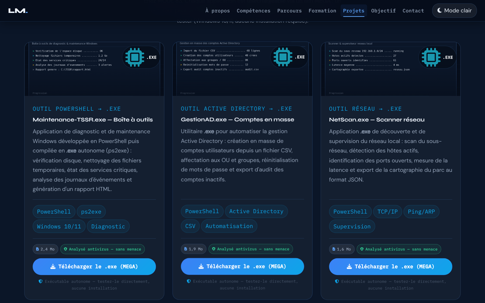
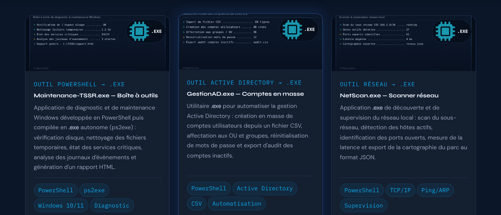
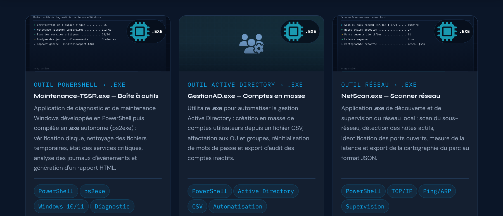
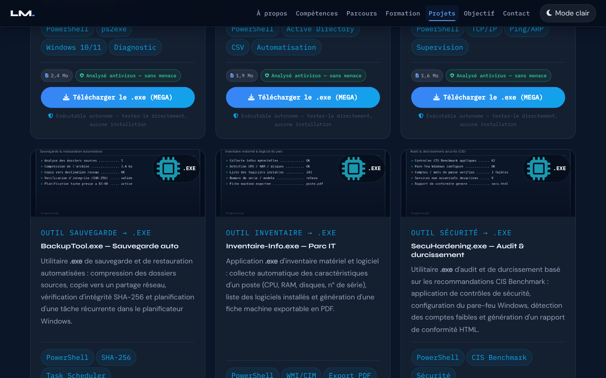
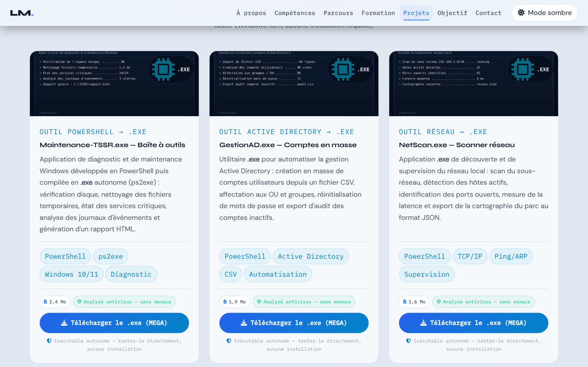
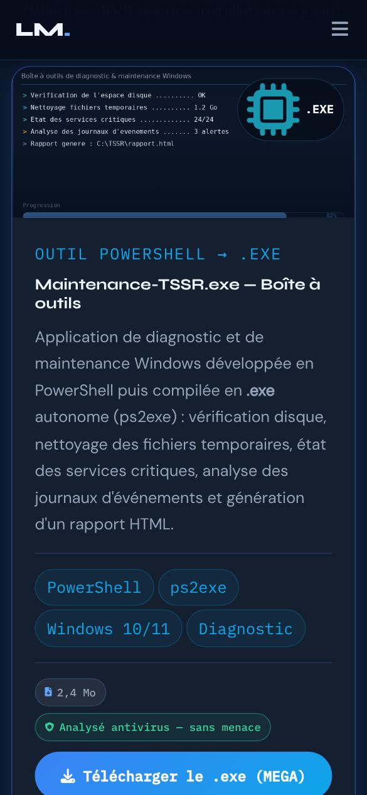

Calques et images
- Rôle
- Empiler icône, capture, voile et badge dans l'en-tête de la carte.
- Documentation
- MDN — inset · MDN — z-index · MDN — object-fit · MDN — pointer-events
- Lignes concernées
- 656 à 674, 690 à 712.
Série « Portfolio TSSR » · 20 épisodes

Objectif de l'épisode
Tous les candidats disent qu'ils savent faire. Peu le prouvent.
Vous allez construire la section la plus importante du portfolio : six applications Windows en .exe que le recruteur peut télécharger.
Chaque carte a sa capture qui zoome au survol, son badge .exe, ses technologies, une pastille antivirus et un bouton de téléchargement.
Et une astuce peu connue : si une image ne se charge pas, la carte bascule toute seule sur une icône de secours qui s'affiche à la place de l'image.

Partie 2
À la fin de cet épisode, vous serez capable de construire une carte riche
en calques superposés, d'aligner des cartes de hauteurs différentes et d'avoir un plan B quand une image manque.
position: absolute, inset: 0 et z-index.object-fit: cover).flex: 1).onerror.col-md-6 col-xl-4).target="_blank", rel="noopener noreferrer") et connaître les limites de download.Les mots des épisodes précédents sont dans les listes des épisodes 1 à 8.
z-index décide lequel est devant.inset: 0top: 0; right: 0; bottom: 0; left: 0 : l'élément couvre toute la zone.object-fit: coveronerrorpointer-events: nonePartie 3
Cochez chaque case quand l'étape est faite. Les cases cochées sont mémorisées sur cet ordinateur.
portfolio-tssr/
├── index.html
├── config.js
├── images/
│ ├── exe-1.png ← capture de Maintenance-TSSR
│ ├── exe-2.png ← capture de GestionAD
│ ├── …
│ └── exe-6.png ← capture de SecuHardening
└── ressources/Les six images sont déjà dans le dossier images/.
Pour votre propre portfolio, vous les remplacerez par de vraies captures de vos applications,
en gardant les mêmes noms.
Partie 4 · par rapport à l'épisode 8
L'épisode 9 ajoute deux blocs : du CSS et une section HTML.
Aucune ligne n'est modifiée ni supprimée, le JavaScript ne change pas
et le correctif du lien actif est conservé.
Les numéros de ligne ci-dessous sont ceux de votre fichier de l'épisode 8 (1364 lignes).
.cert-item (lignes 640 à 643) et la ligne vide qui suit.#projects { à .dl-chip.dl-safe i, 108 lignes, suivies d'une ligne vide) : juste avant #toast { (ligne 645).<style>, barre de navigation et toutes les sections, jusqu'au </section> de Formation.</section> de Formation (ligne 1226), juste avant </main> (ligne 1227).</main>, Bootstrap JS et tout le script, correctif du module 12 compris.Résultat : le fichier passe de 1364 à 1695 lignes.
Les numéros cités dans le reste de cette page sont ceux du nouveau fichier.
Les lignes précédées de + sont à ajouter ; les autres existent déjà.
Zone 1 — la fin du premier <style>
.cert-item { … }
#projects { background: var(--clr-bg2); }
… (carte, en-tête, capture, voile, badge, bouton, pastilles)
.dl-chip.dl-safe i { color: var(--clr-success); }
#toast { … }Zone 2 — dans le <main>
</section> (fin de Formation)
<section id="projects" aria-labelledby="proj-title">
… (l'en-tête et les 6 cartes)
</section>
</main>Le commentaire d'origine « POUR CHAQUE CARTE »
Le fichier de la série contient, juste avant la grille des cartes, un bloc de commentaire qui rappelle quoi remplacer.
Comme tous les commentaires, il n'apparaît pas dans le code à copier, voici ce qu'il dit :
images/exe-N.png par la capture réelle de votre .exe ;href="https://mega.nz/file/..." Partie 5
Les règles pour reconnaître une source officielle restent celles de l'épisode 1.
Les liens marqués s'ouvrent dans un nouvel onglet.
download ne fonctionne que pour les adresses de même origine, ou les schémas blob: et data:. Vers MEGA, il est ignoré.Partie 6
Même cycle : écrire, enregistrer, actualiser, observer, comprendre.
On colle le HTML d'abord : le résultat brut est spectaculaire et chaque bloc de CSS le remet en ordre.
Vous voyez : l'en-tête centré est déjà stylé, et la grille Bootstrap range les cartes par trois. Mais les captures s'affichent à leur taille réelle et débordent, les icônes et les textes sont bruts, et les boutons sont de simples liens. Le lien « Projets » du menu mène à la section et s'allume.
Vous voyez : six cartes encadrées, de même hauteur sur chaque rangée. Au survol, une carte monte et brille.
Vous voyez : les captures sont enfin coupées à 160 pixels de haut, mais encore mal placées : la règle des images arrive à l'étape 5.
Vous voyez : la catégorie en bleu-vert majuscule, le titre en Syne, la description en gris, et un trait au-dessus des tags. Les pieds de carte sont alignés d'une carte à l'autre.
Vous voyez : chaque capture remplit son en-tête sans être déformée, un voile sombre adoucit le bas, et le badge « .EXE » apparaît en haut à droite. Survolez une carte : la capture zoome légèrement. Remarquez la puce du badge, beaucoup trop grande : c'est le défi de la partie 14.
Vous voyez : un grand bouton en dégradé sur toute la largeur, la pastille de taille et la pastille verte « antivirus » au-dessus, et une petite phrase d'aide en dessous. Au clavier (Tab), le bouton s'entoure d'un contour bleu.
Renommez provisoirement images/exe-2.png en exe-2-test.png, puis actualisez.
Vous voyez : la carte GestionAD affiche une grande icône sur fond teinté et quadrillé, à la place de la capture. Remettez le nom d'origine.
Vous avez terminé quand votre fichier fait 1695 lignes, identiques au code de référence (bouton « Surligner les ajouts » de la partie 8), sans erreur rouge dans la Console.
Partie 7 · la plus importante
Chaque fiche répond aux quatre questions Quoi ?, Pourquoi ?, Comment ? et Où ?.
Les numéros sont ceux du nouveau fichier de 1695 lignes.
Les six cartes suivent le même modèle :
lisez en détail la carte 1 (lignes 1355 à 1387), les suivantes renvoient vers elle.
Les calques de l'en-tête, du fond vers l'avant
::before) et la grille (::after) : visibles seulement si la capture manque.<i>, calque 1) : centrée par la boîte flex.<img>, calque 1, écrite après l'icône donc devant elle) : .img-overlay, calque 2) : un dégradé sombre en bas..exe-badge, calque 3) : toujours devant.Si l'image échoue, onerror la cache : on retombe sur les calques du dessous.
Aucun JavaScript supplémentaire, aucune image de remplacement.
Ces lignes existent déjà, seul leur numéro a changé.
Le lien ouvre la fiche de l'épisode où elles ont été expliquées (les dossiers des épisodes doivent être côte à côte).
| Ligne (épisode 9) | Code | Fiche |
|---|---|---|
| 1 | <!DOCTYPE html> | Épisode 1, ligne 1 |
| 2 | <html lang="fr" data-theme="dark" dir="ltr"> | Épisode 1, ligne 2 |
| 3 | <head> | Épisode 1, ligne 3 |
| 4 | <meta charset="UTF-8" /> | Épisode 1, ligne 4 |
| 5 | <meta name="viewport" content="width=device-width, initia… | Épisode 1, ligne 5 |
| 6 | <meta name="description" content="Portfolio professionnel… | Épisode 1, ligne 6 |
| 7 | <meta name="keywords" content="TSSR, technicien systèmes … | Épisode 1, ligne 7 |
| 8 | <meta name="robots" content="index, follow" /> | Épisode 1, ligne 8 |
| 9 | <meta name="theme-color" content="#060d1a" /> | Épisode 1, ligne 9 |
| 10 | <meta name="author" content="Lucas Moreau" /> | Épisode 1, ligne 10 |
| 12 | <link rel="preconnect" href="https://fonts.googleapis.com… | Épisode 1, ligne 12 |
| 13 | <link rel="preconnect" href="https://fonts.gstatic.com" c… | Épisode 1, ligne 13 |
| 14 | <link href="https://fonts.googleapis.com/css2?family=Syne… | Épisode 1, ligne 14 |
| 16 | <link rel="stylesheet" href="https://cdn.jsdelivr.net/npm… | Épisode 1, ligne 16 |
| 17 | <link rel="stylesheet" href="https://cdnjs.cloudflare.com… | Épisode 1, ligne 17 |
| 18 | <link rel="stylesheet" href="https://cdnjs.cloudflare.com… | Épisode 1, ligne 18 |
| 20 | <script src="config.js"></script> | Épisode 1, ligne 20 |
| 21 | <script src="https://cdnjs.cloudflare.com/ajax/libs/pdf.j… | Épisode 1, ligne 21 |
| 23 | <link rel="icon" type="image/png" sizes="32x32" href="ima… | Épisode 1, ligne 23 |
| 24 | <link rel="icon" type="image/png" sizes="192x192" href="i… | Épisode 1, ligne 24 |
| 25 | <link rel="icon" type="image/webp" href="images/favicon-4… | Épisode 1, ligne 25 |
| 26 | <link rel="apple-touch-icon" sizes="180x180" href="images… | Épisode 1, ligne 26 |
| 28 | <title>Portfolio TSSR | Recherche d'emploi – Technicien S… | Épisode 1, ligne 28 |
| 29 | <style> | Épisode 2, ligne 29 |
| 30 | :root { | Épisode 2, ligne 30 |
| 31 | --clr-bg: #060d1a; | Épisode 2, ligne 31 |
| 32 | --clr-bg2: #0b1628; | Épisode 2, ligne 32 |
| 33 | --clr-surface: rgba(255,255,255,.04); | Épisode 2, ligne 33 |
| 34 | --clr-surface2: rgba(255,255,255,.07); | Épisode 2, ligne 34 |
| 35 | --clr-border: rgba(96,165,250,.18); | Épisode 2, ligne 35 |
| 36 | --clr-accent: #3b82f6; | Épisode 2, ligne 36 |
| 37 | --clr-accent2: #60a5fa; | Épisode 2, ligne 37 |
| 38 | --clr-accent3: #93c5fd; | Épisode 2, ligne 38 |
| 39 | --clr-teal: #0ea5e9; | Épisode 2, ligne 39 |
| 40 | --clr-cyan: #22d3ee; | Épisode 2, ligne 40 |
| 41 | --clr-text: #e2e8f0; | Épisode 2, ligne 41 |
| 42 | --clr-text-soft: #94a3b8; | Épisode 2, ligne 42 |
| 43 | --clr-text-faint: #475569; | Épisode 2, ligne 43 |
| 44 | --clr-heading: #f0f6ff; | Épisode 2, ligne 44 |
| 45 | --clr-white: #ffffff; | Épisode 2, ligne 45 |
| 46 | --clr-danger: #f87171; | Épisode 2, ligne 46 |
| 47 | --clr-success: #34d399; | Épisode 2, ligne 47 |
| 48 | --clr-warn: #fbbf24; | Épisode 2, ligne 48 |
| 49 | --radius-sm: 6px; | Épisode 2, ligne 49 |
| 50 | --radius-md: 12px; | Épisode 2, ligne 50 |
| 51 | --radius-lg: 20px; | Épisode 2, ligne 51 |
| 52 | --radius-xl: 32px; | Épisode 2, ligne 52 |
| 53 | --shadow-glow: 0 0 40px rgba(59,130,246,.25); | Épisode 2, ligne 53 |
| 54 | --shadow-card: 0 8px 32px rgba(0,0,0,.45); | Épisode 2, ligne 54 |
| 55 | --trans: .3s cubic-bezier(.4,0,.2,1); | Épisode 2, ligne 55 |
| 56 | --font-display: 'Syne', sans-serif; | Épisode 2, ligne 56 |
| 57 | --font-mono: 'IBM Plex Mono', monospace; | Épisode 2, ligne 57 |
| 58 | --font-body: 'DM Sans', sans-serif; | Épisode 2, ligne 58 |
| 59 | --fz-min: 1.05rem; | Épisode 2, ligne 59 |
| 60 | } | Épisode 2, ligne 60 |
| 62 | [data-theme="light"] { | Épisode 2, ligne 62 |
| 63 | --clr-bg: #f0f4fa; | Épisode 2, ligne 63 |
| 64 | --clr-bg2: #e2e8f0; | Épisode 2, ligne 64 |
| 65 | --clr-surface: rgba(255,255,255,.7); | Épisode 2, ligne 65 |
| 66 | --clr-surface2: rgba(255,255,255,.9); | Épisode 2, ligne 66 |
| 67 | --clr-border: rgba(59,130,246,.2); | Épisode 2, ligne 67 |
| 68 | --clr-accent: #2563eb; | Épisode 2, ligne 68 |
| 69 | --clr-accent2: #3b82f6; | Épisode 2, ligne 69 |
| 70 | --clr-accent3: #60a5fa; | Épisode 2, ligne 70 |
| 71 | --clr-teal: #0284c7; | Épisode 2, ligne 71 |
| 72 | --clr-cyan: #0891b2; | Épisode 2, ligne 72 |
| 73 | --clr-text: #1e293b; | Épisode 2, ligne 73 |
| 74 | --clr-text-soft: #475569; | Épisode 2, ligne 74 |
| 75 | --clr-text-faint: #94a3b8; | Épisode 2, ligne 75 |
| 76 | --clr-heading: #0f172a; | Épisode 2, ligne 76 |
| 77 | --clr-white: #ffffff; | Épisode 2, ligne 77 |
| 78 | --shadow-glow: 0 0 40px rgba(37,99,235,.15); | Épisode 2, ligne 78 |
| 79 | --shadow-card: 0 8px 32px rgba(0,0,0,.12); | Épisode 2, ligne 79 |
| 80 | } | Épisode 2, ligne 80 |
| 82 | *, *::before, *::after { box-sizing: border-box; margin: … | Épisode 2, ligne 82 |
| 84 | html { scroll-behavior: smooth; font-size: 16px; } | Épisode 2, ligne 84 |
| 86 | body { | Épisode 2, ligne 86 |
| 87 | font-family: var(--font-body); | Épisode 2, ligne 87 |
| 88 | background-color: var(--clr-bg); | Épisode 2, ligne 88 |
| 89 | color: var(--clr-text); | Épisode 2, ligne 89 |
| 90 | font-size: var(--fz-min); | Épisode 2, ligne 90 |
| 91 | line-height: 1.7; | Épisode 2, ligne 91 |
| 92 | overflow-x: hidden; | Épisode 2, ligne 92 |
| 93 | transition: background-color var(--trans), color var(--tr… | Épisode 2, ligne 93 |
| 94 | } | Épisode 2, ligne 94 |
| 96 | ::-webkit-scrollbar { width: 7px; } | Épisode 2, ligne 96 |
| 97 | ::-webkit-scrollbar-track { background: var(--clr… | Épisode 2, ligne 97 |
| 98 | ::-webkit-scrollbar-thumb { | Épisode 2, ligne 98 |
| 99 | background: linear-gradient(180deg, var(--clr-accent), va… | Épisode 2, ligne 99 |
| 100 | border-radius: 10px; height: 120px; | Épisode 2, ligne 100 |
| 101 | } | Épisode 2, ligne 101 |
| 102 | ::-webkit-scrollbar-thumb:hover { | Épisode 2, ligne 102 |
| 103 | background: linear-gradient(180deg, var(--clr-accent2), v… | Épisode 2, ligne 103 |
| 104 | box-shadow: 0 0 8px var(--clr-accent); | Épisode 2, ligne 104 |
| 105 | } | Épisode 2, ligne 105 |
| 107 | .skip-link { | Épisode 2, ligne 107 |
| 108 | position: absolute; | Épisode 2, ligne 108 |
| 109 | top: -60px; left: 1rem; | Épisode 2, ligne 109 |
| 110 | background: var(--clr-accent); | Épisode 2, ligne 110 |
| 111 | color: var(--clr-white); | Épisode 2, ligne 111 |
| 112 | padding: .6rem 1.2rem; | Épisode 2, ligne 112 |
| 113 | border-radius: var(--radius-md); | Épisode 2, ligne 113 |
| 114 | font-weight: 600; | Épisode 2, ligne 114 |
| 115 | font-size: var(--fz-min); | Épisode 2, ligne 115 |
| 116 | z-index: 9999; | Épisode 2, ligne 116 |
| 117 | transition: top .2s; | Épisode 2, ligne 117 |
| 118 | text-decoration: none; | Épisode 2, ligne 118 |
| 119 | } | Épisode 2, ligne 119 |
| 120 | .skip-link:focus { top: 1rem; } | Épisode 2, ligne 120 |
| 122 | #read-progress { | Épisode 2, ligne 122 |
| 123 | position: fixed; top: 0; left: 0; | Épisode 2, ligne 123 |
| 124 | height: 3px; width: 0%; | Épisode 2, ligne 124 |
| 125 | background: linear-gradient(90deg, var(--clr-accent), var… | Épisode 2, ligne 125 |
| 126 | z-index: 9998; | Épisode 2, ligne 126 |
| 127 | transition: width .1s linear; | Épisode 2, ligne 127 |
| 128 | box-shadow: 0 0 10px var(--clr-accent); | Épisode 2, ligne 128 |
| 129 | } | Épisode 2, ligne 129 |
| 131 | #mainNav { | Épisode 3, ligne 131 |
| 132 | position: fixed; top: 0; left: 0; right: 0; | Épisode 3, ligne 132 |
| 133 | z-index: 1050; | Épisode 3, ligne 133 |
| 134 | padding: .9rem 0; | Épisode 3, ligne 134 |
| 135 | background: rgba(6,13,26,.82); | Épisode 3, ligne 135 |
| 136 | backdrop-filter: blur(18px) saturate(1.4); | Épisode 3, ligne 136 |
| 137 | -webkit-backdrop-filter: blur(18px) saturate(1.4); | Épisode 3, ligne 137 |
| 138 | border-bottom: 1px solid var(--clr-border); | Épisode 3, ligne 138 |
| 139 | transition: all var(--trans); | Épisode 3, ligne 139 |
| 140 | } | Épisode 3, ligne 140 |
| 141 | #mainNav.scrolled { | Épisode 3, ligne 141 |
| 142 | padding: .55rem 0; | Épisode 3, ligne 142 |
| 143 | background: rgba(6,13,26,.95); | Épisode 3, ligne 143 |
| 144 | box-shadow: 0 4px 30px rgba(0,0,0,.4); | Épisode 3, ligne 144 |
| 145 | } | Épisode 3, ligne 145 |
| 146 | [data-theme="light"] #mainNav { background: rgba(240,244,… | Épisode 3, ligne 146 |
| 147 | [data-theme="light"] #mainNav.scrolled { background: rgba… | Épisode 3, ligne 147 |
| 149 | .nav-brand { | Épisode 3, ligne 149 |
| 150 | font-family: var(--font-display); | Épisode 3, ligne 150 |
| 151 | font-weight: 800; font-size: 1.3rem; | Épisode 3, ligne 151 |
| 152 | color: var(--clr-heading) !important; | Épisode 3, ligne 152 |
| 153 | text-decoration: none; letter-spacing: -.02em; | Épisode 3, ligne 153 |
| 154 | } | Épisode 3, ligne 154 |
| 155 | .nav-brand span { color: var(--clr-accent2); } | Épisode 3, ligne 155 |
| 157 | .navbar-nav .nav-link { | Épisode 3, ligne 157 |
| 158 | font-family: var(--font-mono); | Épisode 3, ligne 158 |
| 159 | font-size: .92rem; | Épisode 3, ligne 159 |
| 160 | font-weight: 500; | Épisode 3, ligne 160 |
| 161 | color: var(--clr-text-soft) !important; | Épisode 3, ligne 161 |
| 162 | letter-spacing: .02em; | Épisode 3, ligne 162 |
| 163 | padding: .4rem .5rem !important; | Épisode 3, ligne 163 |
| 164 | border-radius: var(--radius-sm); | Épisode 3, ligne 164 |
| 165 | transition: all var(--trans); | Épisode 3, ligne 165 |
| 166 | position: relative; | Épisode 3, ligne 166 |
| 167 | } | Épisode 3, ligne 167 |
| 168 | .navbar-nav .nav-link::before { | Épisode 3, ligne 168 |
| 169 | content: ''; | Épisode 3, ligne 169 |
| 170 | position: absolute; bottom: 0; left: 50%; right: 50%; | Épisode 3, ligne 170 |
| 171 | height: 2px; background: var(--clr-accent2); | Épisode 3, ligne 171 |
| 172 | border-radius: 2px; transition: all var(--trans); | Épisode 3, ligne 172 |
| 173 | } | Épisode 3, ligne 173 |
| 174 | .navbar-nav .nav-link:hover, | Épisode 3, ligne 174 |
| 175 | .navbar-nav .nav-link:focus { | Épisode 3, ligne 175 |
| 176 | color: var(--clr-accent2) !important; | Épisode 3, ligne 176 |
| 177 | background: rgba(59,130,246,.08); | Épisode 3, ligne 177 |
| 178 | } | Épisode 3, ligne 178 |
| 179 | .navbar-nav .nav-link:hover::before, | Épisode 3, ligne 179 |
| 180 | .navbar-nav .nav-link:focus::before { left: 10%; right: 1… | Épisode 3, ligne 180 |
| 182 | .navbar-nav .nav-link.active { | Épisode 8, ligne 182 |
| 183 | color: var(--clr-accent2) !important; | Épisode 8, ligne 183 |
| 184 | background: rgba(59,130,246,.08); | Épisode 8, ligne 184 |
| 185 | } | Épisode 8, ligne 185 |
| 186 | .navbar-nav .nav-link.active::before { left: 10%; right: … | Épisode 8, ligne 186 |
| 188 | #themeToggle { | Épisode 3, ligne 182 |
| 189 | background: var(--clr-surface2); | Épisode 3, ligne 183 |
| 190 | border: 1px solid var(--clr-border); | Épisode 3, ligne 184 |
| 191 | color: var(--clr-text); | Épisode 3, ligne 185 |
| 192 | padding: .4rem .9rem; | Épisode 3, ligne 186 |
| 193 | border-radius: var(--radius-lg); | Épisode 3, ligne 187 |
| 194 | cursor: pointer; font-size: var(--fz-min); | Épisode 3, ligne 188 |
| 195 | transition: all var(--trans); | Épisode 3, ligne 189 |
| 196 | display: flex; align-items: center; gap: .5rem; | Épisode 3, ligne 190 |
| 197 | white-space: nowrap; | Épisode 3, ligne 191 |
| 198 | } | Épisode 3, ligne 192 |
| 199 | #themeToggle:hover { background: var(--clr-accent); color… | Épisode 3, ligne 193 |
| 200 | #themeToggle:focus-visible { outline: 2px solid var(--clr… | Épisode 3, ligne 194 |
| 202 | #hero { | Épisode 4, ligne 196 |
| 203 | min-height: 100vh; | Épisode 4, ligne 197 |
| 204 | display: flex; align-items: center; | Épisode 4, ligne 198 |
| 205 | position: relative; overflow: hidden; | Épisode 4, ligne 199 |
| 206 | padding: 7rem 0 4rem; | Épisode 4, ligne 200 |
| 207 | } | Épisode 4, ligne 201 |
| 208 | #hero::before { | Épisode 4, ligne 202 |
| 209 | content: ''; position: absolute; inset: 0; | Épisode 4, ligne 203 |
| 210 | background-image: | Épisode 4, ligne 204 |
| 211 | linear-gradient(rgba(59,130,246,.07) 1px, transparent 1px), | Épisode 4, ligne 205 |
| 212 | linear-gradient(90deg, rgba(59,130,246,.07) 1px, transpar… | Épisode 4, ligne 206 |
| 213 | background-size: 40px 40px; z-index: 0; | Épisode 4, ligne 207 |
| 214 | } | Épisode 4, ligne 208 |
| 215 | #hero::after { | Épisode 4, ligne 209 |
| 216 | content: ''; position: absolute; | Épisode 4, ligne 210 |
| 217 | top: -10%; left: -10%; width: 70%; height: 70%; | Épisode 4, ligne 211 |
| 218 | background: radial-gradient(ellipse at center, rgba(59,13… | Épisode 4, ligne 212 |
| 219 | z-index: 0; animation: floatGlow 6s ease-in-out infinite … | Épisode 4, ligne 213 |
| 220 | } | Épisode 4, ligne 214 |
| 221 | @keyframes floatGlow { | Épisode 4, ligne 215 |
| 222 | from { transform: translate(0,0) scale(1); } | Épisode 4, ligne 216 |
| 223 | to { transform: translate(4%,3%) scale(1.05); } | Épisode 4, ligne 217 |
| 224 | } | Épisode 4, ligne 218 |
| 225 | .hero-content { position: relative; z-index: 1; } | Épisode 4, ligne 219 |
| 227 | .status-badge { | Épisode 4, ligne 221 |
| 228 | display: inline-flex; align-items: center; gap: .5rem; | Épisode 4, ligne 222 |
| 229 | background: rgba(52,211,153,.1); | Épisode 4, ligne 223 |
| 230 | border: 1px solid rgba(52,211,153,.3); | Épisode 4, ligne 224 |
| 231 | color: var(--clr-success); | Épisode 4, ligne 225 |
| 232 | font-family: var(--font-mono); | Épisode 4, ligne 226 |
| 233 | font-size: var(--fz-min); font-weight: 500; | Épisode 4, ligne 227 |
| 234 | letter-spacing: .04em; | Épisode 4, ligne 228 |
| 235 | padding: .4rem 1rem; border-radius: 100px; | Épisode 4, ligne 229 |
| 236 | margin-bottom: 1.4rem; | Épisode 4, ligne 230 |
| 237 | } | Épisode 4, ligne 231 |
| 238 | .status-dot { | Épisode 4, ligne 232 |
| 239 | width: 7px; height: 7px; | Épisode 4, ligne 233 |
| 240 | background: var(--clr-success); border-radius: 50%; | Épisode 4, ligne 234 |
| 241 | animation: pulse-dot 1.6s ease infinite; flex-shrink: 0; | Épisode 4, ligne 235 |
| 242 | } | Épisode 4, ligne 236 |
| 243 | @keyframes pulse-dot { | Épisode 4, ligne 237 |
| 244 | 0%,100% { opacity: 1; transform: scale(1); } | Épisode 4, ligne 238 |
| 245 | 50% { opacity: .5; transform: scale(.75); } | Épisode 4, ligne 239 |
| 246 | } | Épisode 4, ligne 240 |
| 248 | .hero-title { | Épisode 4, ligne 242 |
| 249 | font-family: var(--font-display); font-weight: 800; | Épisode 4, ligne 243 |
| 250 | font-size: clamp(2.4rem, 6vw, 4.2rem); | Épisode 4, ligne 244 |
| 251 | line-height: 1.1; color: var(--clr-heading); | Épisode 4, ligne 245 |
| 252 | letter-spacing: -.03em; margin-bottom: 1rem; | Épisode 4, ligne 246 |
| 253 | } | Épisode 4, ligne 247 |
| 254 | .hero-title .accent { color: var(--clr-accent2); } | Épisode 4, ligne 248 |
| 255 | .hero-title .typing-cursor { | Épisode 4, ligne 249 |
| 256 | display: inline-block; width: 3px; height: 1em; | Épisode 4, ligne 250 |
| 257 | background: var(--clr-accent2); margin-left: 3px; | Épisode 4, ligne 251 |
| 258 | vertical-align: text-bottom; | Épisode 4, ligne 252 |
| 259 | animation: blink .75s step-end infinite; | Épisode 4, ligne 253 |
| 260 | } | Épisode 4, ligne 254 |
| 261 | @keyframes blink { 50% { opacity: 0; } } | Épisode 4, ligne 255 |
| 263 | .hero-subtitle { | Épisode 4, ligne 257 |
| 264 | font-family: var(--font-mono); | Épisode 4, ligne 258 |
| 265 | font-size: clamp(var(--fz-min), 1.8vw, 1.15rem); | Épisode 4, ligne 259 |
| 266 | color: var(--clr-accent3); letter-spacing: .04em; margin-… | Épisode 4, ligne 260 |
| 267 | } | Épisode 4, ligne 261 |
| 268 | .hero-desc { | Épisode 4, ligne 262 |
| 269 | font-size: clamp(var(--fz-min), 2vw, 1.15rem); | Épisode 4, ligne 263 |
| 270 | color: var(--clr-text-soft); | Épisode 4, ligne 264 |
| 271 | max-width: 520px; margin-bottom: 2.2rem; line-height: 1.8; | Épisode 4, ligne 265 |
| 272 | } | Épisode 4, ligne 266 |
| 274 | .hero-avatar-wrap { | Épisode 4, ligne 268 |
| 275 | position: relative; display: flex; | Épisode 4, ligne 269 |
| 276 | justify-content: center; align-items: center; | Épisode 4, ligne 270 |
| 277 | } | Épisode 4, ligne 271 |
| 278 | .hero-avatar-ring { | Épisode 4, ligne 272 |
| 279 | position: relative; | Épisode 4, ligne 273 |
| 280 | width: clamp(220px,30vw,300px); | Épisode 4, ligne 274 |
| 281 | height: clamp(220px,30vw,300px); | Épisode 4, ligne 275 |
| 282 | } | Épisode 4, ligne 276 |
| 283 | .hero-avatar-ring::before, | Épisode 4, ligne 277 |
| 284 | .hero-avatar-ring::after { | Épisode 4, ligne 278 |
| 285 | content: ''; | Épisode 4, ligne 279 |
| 286 | position: absolute; | Épisode 4, ligne 280 |
| 287 | inset: -12px; | Épisode 4, ligne 281 |
| 288 | border-radius: 50%; | Épisode 4, ligne 282 |
| 289 | border: 2px solid transparent; | Épisode 4, ligne 283 |
| 291 | background: conic-gradient( | Épisode 4, ligne 285 |
| 292 | from 0deg, | Épisode 4, ligne 286 |
| 293 | var(--clr-accent), | Épisode 4, ligne 287 |
| 294 | var(--clr-teal), | Épisode 4, ligne 288 |
| 295 | transparent 60% | Épisode 4, ligne 289 |
| 296 | ) border-box; | Épisode 4, ligne 290 |
| 298 | -webkit-mask: | Épisode 4, ligne 292 |
| 299 | linear-gradient(#fff 0 0) padding-box, | Épisode 4, ligne 293 |
| 300 | linear-gradient(#fff 0 0); | Épisode 4, ligne 294 |
| 302 | -webkit-mask-composite: destination-out; | Épisode 4, ligne 296 |
| 304 | mask: | Épisode 4, ligne 298 |
| 305 | linear-gradient(#fff 0 0) padding-box, | Épisode 4, ligne 299 |
| 306 | linear-gradient(#fff 0 0); | Épisode 4, ligne 300 |
| 308 | mask-composite: exclude; | Épisode 4, ligne 302 |
| 310 | animation: spinRing 8s linear infinite; | Épisode 4, ligne 304 |
| 311 | } | Épisode 4, ligne 305 |
| 312 | .hero-avatar-ring::after { | Épisode 4, ligne 306 |
| 313 | inset: -22px; border-width: 1px; opacity: .4; | Épisode 4, ligne 307 |
| 314 | animation-duration: 14s; animation-direction: reverse; | Épisode 4, ligne 308 |
| 315 | } | Épisode 4, ligne 309 |
| 316 | @keyframes spinRing { to { transform: rotate(360deg); } } | Épisode 4, ligne 310 |
| 318 | .hero-avatar { | Épisode 4, ligne 312 |
| 319 | width: 100%; height: 100%; border-radius: 50%; | Épisode 4, ligne 313 |
| 320 | background: linear-gradient(145deg, #1a3a5c 0%, #0b1e38 4… | Épisode 4, ligne 314 |
| 321 | border: 3px solid var(--clr-border); | Épisode 4, ligne 315 |
| 322 | display: flex; flex-direction: column; | Épisode 4, ligne 316 |
| 323 | align-items: center; justify-content: center; gap: .4rem; | Épisode 4, ligne 317 |
| 324 | overflow: hidden; position: relative; | Épisode 4, ligne 318 |
| 325 | } | Épisode 4, ligne 319 |
| 326 | .hero-avatar i { font-size: clamp(4rem,10vw,5.5rem); colo… | Épisode 4, ligne 320 |
| 327 | .hero-avatar .avatar-label { | Épisode 4, ligne 321 |
| 328 | font-family: var(--font-mono); font-size: var(--fz-min); | Épisode 4, ligne 322 |
| 329 | color: var(--clr-accent2); letter-spacing: .1em; opacity:… | Épisode 4, ligne 323 |
| 330 | } | Épisode 4, ligne 324 |
| 332 | .floating-chip { | Épisode 4, ligne 326 |
| 333 | position: absolute; | Épisode 4, ligne 327 |
| 334 | background: var(--clr-surface); backdrop-filter: blur(10px); | Épisode 4, ligne 328 |
| 335 | border: 1px solid var(--clr-border); border-radius: var(-… | Épisode 4, ligne 329 |
| 336 | padding: .5rem 1rem; font-family: var(--font-mono); | Épisode 4, ligne 330 |
| 337 | font-size: var(--fz-min); color: var(--clr-accent3); whit… | Épisode 4, ligne 331 |
| 338 | animation: chipFloat 4s ease-in-out infinite alternate; | Épisode 4, ligne 332 |
| 339 | } | Épisode 4, ligne 333 |
| 340 | .floating-chip:nth-child(2) { top: 5%; left: -8%; anima… | Épisode 4, ligne 334 |
| 341 | .floating-chip:nth-child(3) { bottom: 8%; right: -8%; ani… | Épisode 4, ligne 335 |
| 342 | .floating-chip:nth-child(4) { top: 40%; right: -12%; ani… | Épisode 4, ligne 336 |
| 343 | @keyframes chipFloat { | Épisode 4, ligne 337 |
| 344 | from { transform: translateY(0); } | Épisode 4, ligne 338 |
| 345 | to { transform: translateY(-8px); } | Épisode 4, ligne 339 |
| 346 | } | Épisode 4, ligne 340 |
| 348 | .btn-hero-primary { | Épisode 4, ligne 342 |
| 349 | display: inline-flex; align-items: center; gap: .55rem; | Épisode 4, ligne 343 |
| 350 | background: linear-gradient(135deg, var(--clr-accent), va… | Épisode 4, ligne 344 |
| 351 | color: #fff; font-family: var(--font-display); font-weigh… | Épisode 4, ligne 345 |
| 352 | font-size: var(--fz-min); padding: .85rem 1.9rem; | Épisode 4, ligne 346 |
| 353 | border-radius: var(--radius-lg); text-decoration: none; b… | Épisode 4, ligne 347 |
| 354 | cursor: pointer; transition: all var(--trans); | Épisode 4, ligne 348 |
| 355 | box-shadow: 0 4px 24px rgba(59,130,246,.35); | Épisode 4, ligne 349 |
| 356 | } | Épisode 4, ligne 350 |
| 357 | .btn-hero-primary:hover { transform: translateY(-3px); bo… | Épisode 4, ligne 351 |
| 358 | .btn-hero-primary:focus-visible { outline: 3px solid var(… | Épisode 4, ligne 352 |
| 360 | .btn-hero-secondary { | Épisode 4, ligne 354 |
| 361 | display: inline-flex; align-items: center; gap: .55rem; | Épisode 4, ligne 355 |
| 362 | background: transparent; color: var(--clr-text); | Épisode 4, ligne 356 |
| 363 | font-family: var(--font-display); font-weight: 600; | Épisode 4, ligne 357 |
| 364 | font-size: var(--fz-min); padding: .85rem 1.9rem; | Épisode 4, ligne 358 |
| 365 | border-radius: var(--radius-lg); text-decoration: none; | Épisode 4, ligne 359 |
| 366 | border: 1px solid var(--clr-border); cursor: pointer; | Épisode 4, ligne 360 |
| 367 | transition: all var(--trans); | Épisode 4, ligne 361 |
| 368 | } | Épisode 4, ligne 362 |
| 369 | .btn-hero-secondary:hover { | Épisode 4, ligne 363 |
| 370 | background: var(--clr-surface2); border-color: var(--clr-… | Épisode 4, ligne 364 |
| 371 | color: var(--clr-accent2); transform: translateY(-3px); | Épisode 4, ligne 365 |
| 372 | } | Épisode 4, ligne 366 |
| 373 | .btn-hero-secondary:focus-visible { outline: 3px solid va… | Épisode 4, ligne 367 |
| 375 | .hero-stats { display: flex; gap: 2rem; margin-top: 2.8re… | Épisode 4, ligne 369 |
| 376 | .hero-stat { text-align: left; } | Épisode 4, ligne 370 |
| 377 | .hero-stat .stat-val { | Épisode 4, ligne 371 |
| 378 | font-family: var(--font-display); font-weight: 800; font-… | Épisode 4, ligne 372 |
| 379 | color: var(--clr-heading); line-height: 1; | Épisode 4, ligne 373 |
| 380 | } | Épisode 4, ligne 374 |
| 381 | .hero-stat .stat-val span { color: var(--clr-accent2); } | Épisode 4, ligne 375 |
| 382 | .hero-stat .stat-lbl { | Épisode 4, ligne 376 |
| 383 | font-family: var(--font-mono); font-size: var(--fz-min); | Épisode 4, ligne 377 |
| 384 | color: var(--clr-text-faint); letter-spacing: .04em; | Épisode 4, ligne 378 |
| 385 | margin-top: .3rem; line-height: 1.4; | Épisode 4, ligne 379 |
| 386 | } | Épisode 4, ligne 380 |
| 387 | .hero-stat-sep { width: 1px; background: var(--clr-border… | Épisode 4, ligne 381 |
| 389 | .scroll-indicator { | Épisode 4, ligne 383 |
| 390 | position: absolute; bottom: 2.5rem; left: 50%; | Épisode 4, ligne 384 |
| 391 | transform: translateX(-50%); | Épisode 4, ligne 385 |
| 392 | display: flex; flex-direction: column; align-items: cente… | Épisode 4, ligne 386 |
| 393 | cursor: pointer; animation: bounceDown 2s ease infinite; … | Épisode 4, ligne 387 |
| 394 | text-decoration: none; | Épisode 4, ligne 388 |
| 395 | } | Épisode 4, ligne 389 |
| 396 | .scroll-indicator span { | Épisode 4, ligne 390 |
| 397 | font-family: var(--font-mono); font-size: var(--fz-min); | Épisode 4, ligne 391 |
| 398 | letter-spacing: .08em; color: var(--clr-text-faint); | Épisode 4, ligne 392 |
| 399 | } | Épisode 4, ligne 393 |
| 400 | .scroll-indicator i { color: var(--clr-accent2); font-siz… | Épisode 4, ligne 394 |
| 401 | @keyframes bounceDown { | Épisode 4, ligne 395 |
| 402 | 0%,20%,50%,80%,100% { transform: translateX(-50%) transla… | Épisode 4, ligne 396 |
| 403 | 40% { transform: translateX(-50%) translateY(6px); } | Épisode 4, ligne 397 |
| 404 | 60% { transform: translateX(-50%) translateY(3px); } | Épisode 4, ligne 398 |
| 405 | } | Épisode 4, ligne 399 |
| 407 | section { padding: 5.5rem 0; } | Épisode 5, ligne 401 |
| 409 | .section-label { | Épisode 5, ligne 403 |
| 410 | font-family: var(--font-mono); font-size: var(--fz-min); | Épisode 5, ligne 404 |
| 411 | letter-spacing: .12em; color: var(--clr-accent2); | Épisode 5, ligne 405 |
| 412 | text-transform: uppercase; display: flex; align-items: ce… | Épisode 5, ligne 406 |
| 413 | margin-bottom: .8rem; | Épisode 5, ligne 407 |
| 414 | } | Épisode 5, ligne 408 |
| 415 | .section-label::before { content: '//'; opacity: .5; } | Épisode 5, ligne 409 |
| 417 | .section-title { | Épisode 5, ligne 411 |
| 418 | font-family: var(--font-display); font-weight: 800; | Épisode 5, ligne 412 |
| 419 | font-size: clamp(1.8rem, 4vw, 2.8rem); | Épisode 5, ligne 413 |
| 420 | color: var(--clr-heading); letter-spacing: -.02em; | Épisode 5, ligne 414 |
| 421 | line-height: 1.15; margin-bottom: 1rem; | Épisode 5, ligne 415 |
| 422 | } | Épisode 5, ligne 416 |
| 423 | .section-title .accent { color: var(--clr-accent2); } | Épisode 5, ligne 417 |
| 425 | .section-desc { | Épisode 5, ligne 419 |
| 426 | color: var(--clr-text-soft); font-size: var(--fz-min); | Épisode 5, ligne 420 |
| 427 | max-width: 600px; line-height: 1.75; | Épisode 5, ligne 421 |
| 428 | } | Épisode 5, ligne 422 |
| 430 | .section-divider { | Épisode 5, ligne 424 |
| 431 | display: flex; align-items: center; gap: .8rem; margin: .… | Épisode 5, ligne 425 |
| 432 | } | Épisode 5, ligne 426 |
| 433 | .section-divider .line { | Épisode 5, ligne 427 |
| 434 | height: 2px; width: 48px; | Épisode 5, ligne 428 |
| 435 | background: linear-gradient(90deg, var(--clr-accent), tra… | Épisode 5, ligne 429 |
| 436 | border-radius: 2px; | Épisode 5, ligne 430 |
| 437 | } | Épisode 5, ligne 431 |
| 438 | .section-divider .dot { | Épisode 5, ligne 432 |
| 439 | width: 6px; height: 6px; border-radius: 50%; background: … | Épisode 5, ligne 433 |
| 440 | } | Épisode 5, ligne 434 |
| 442 | .reveal { | Épisode 5, ligne 436 |
| 443 | opacity: 0; transform: translateY(30px); | Épisode 5, ligne 437 |
| 444 | transition: opacity .65s cubic-bezier(.4,0,.2,1), transfo… | Épisode 5, ligne 438 |
| 445 | } | Épisode 5, ligne 439 |
| 446 | .reveal.visible { opacity: 1; transform: translateY(0); } | Épisode 5, ligne 440 |
| 447 | .reveal-left { transform: translateX(-30px); } | Épisode 5, ligne 441 |
| 448 | .reveal-right { transform: translateX(30px); } | Épisode 5, ligne 442 |
| 449 | .reveal-left.visible, .reveal-right.visible { transform: … | Épisode 5, ligne 443 |
| 451 | .glass-card { | Épisode 5, ligne 445 |
| 452 | background: var(--clr-surface); backdrop-filter: blur(14px); | Épisode 5, ligne 446 |
| 453 | -webkit-backdrop-filter: blur(14px); | Épisode 5, ligne 447 |
| 454 | border: 1px solid var(--clr-border); border-radius: var(-… | Épisode 5, ligne 448 |
| 455 | padding: 2rem; transition: all var(--trans); box-shadow: … | Épisode 5, ligne 449 |
| 456 | } | Épisode 5, ligne 450 |
| 457 | .glass-card:hover { | Épisode 5, ligne 451 |
| 458 | border-color: rgba(59,130,246,.4); | Épisode 5, ligne 452 |
| 459 | box-shadow: var(--shadow-glow), var(--shadow-card); trans… | Épisode 5, ligne 453 |
| 460 | } | Épisode 5, ligne 454 |
| 462 | #about { background: var(--clr-bg2); } | Épisode 5, ligne 456 |
| 464 | .about-text p { | Épisode 5, ligne 458 |
| 465 | color: var(--clr-text); font-size: var(--fz-min); | Épisode 5, ligne 459 |
| 466 | line-height: 1.85; margin-bottom: 1.1rem; | Épisode 5, ligne 460 |
| 467 | } | Épisode 5, ligne 461 |
| 468 | .about-text strong { color: var(--clr-accent2); font-weig… | Épisode 5, ligne 462 |
| 470 | .about-info-grid { | Épisode 5, ligne 464 |
| 471 | display: grid; grid-template-columns: 1fr 1fr; gap: .85re… | Épisode 5, ligne 465 |
| 472 | } | Épisode 5, ligne 466 |
| 473 | .about-info-item { | Épisode 5, ligne 467 |
| 474 | display: flex; align-items: center; gap: .65rem; | Épisode 5, ligne 468 |
| 475 | font-size: var(--fz-min); color: var(--clr-text-soft); | Épisode 5, ligne 469 |
| 476 | } | Épisode 5, ligne 470 |
| 477 | .about-info-item i { width: 20px; color: var(--clr-accent… | Épisode 5, ligne 471 |
| 479 | .motive-list { list-style: none; padding: 0; display: fle… | Épisode 5, ligne 473 |
| 480 | .motive-list li { | Épisode 5, ligne 474 |
| 481 | display: flex; align-items: flex-start; gap: .85rem; | Épisode 5, ligne 475 |
| 482 | font-size: var(--fz-min); color: var(--clr-text-soft); | Épisode 5, ligne 476 |
| 483 | padding: .8rem 1rem; background: var(--clr-surface); | Épisode 5, ligne 477 |
| 484 | border: 1px solid var(--clr-border); border-radius: var(-… | Épisode 5, ligne 478 |
| 485 | transition: all var(--trans); | Épisode 5, ligne 479 |
| 486 | } | Épisode 5, ligne 480 |
| 487 | .motive-list li:hover { border-color: var(--clr-accent2);… | Épisode 5, ligne 481 |
| 488 | .motive-list li .ico { | Épisode 5, ligne 482 |
| 489 | width: 34px; height: 34px; | Épisode 5, ligne 483 |
| 490 | background: linear-gradient(135deg, var(--clr-accent), va… | Épisode 5, ligne 484 |
| 491 | border-radius: var(--radius-sm); display: flex; align-ite… | Épisode 5, ligne 485 |
| 492 | justify-content: center; flex-shrink: 0; font-size: var(-… | Épisode 5, ligne 486 |
| 493 | } | Épisode 5, ligne 487 |
| 494 | .motive-list li strong { | Épisode 5, ligne 488 |
| 495 | color: var(--clr-heading); display: block; | Épisode 5, ligne 489 |
| 496 | margin-bottom: .2rem; font-size: var(--fz-min); | Épisode 5, ligne 490 |
| 497 | } | Épisode 5, ligne 491 |
| 499 | #skills { background: var(--clr-bg); } | Épisode 6, ligne 493 |
| 501 | .skill-cat-title { | Épisode 5, ligne 493 |
| 502 | font-family: var(--font-mono); font-size: var(--fz-min); | Épisode 5, ligne 494 |
| 503 | letter-spacing: .1em; color: var(--clr-accent2); | Épisode 5, ligne 495 |
| 504 | text-transform: uppercase; margin-bottom: 1.2rem; | Épisode 5, ligne 496 |
| 505 | } | Épisode 5, ligne 497 |
| 507 | .skill-card { | Épisode 6, ligne 501 |
| 508 | background: var(--clr-surface); border: 1px solid var(--c… | Épisode 6, ligne 502 |
| 509 | border-radius: var(--radius-md); padding: 1.2rem 1.4rem; | Épisode 6, ligne 503 |
| 510 | transition: all var(--trans); cursor: default; | Épisode 6, ligne 504 |
| 511 | } | Épisode 6, ligne 505 |
| 512 | .skill-card:hover { | Épisode 6, ligne 506 |
| 513 | border-color: rgba(59,130,246,.45); background: var(--clr… | Épisode 6, ligne 507 |
| 514 | transform: translateY(-3px); box-shadow: 0 6px 24px rgba(… | Épisode 6, ligne 508 |
| 515 | } | Épisode 6, ligne 509 |
| 516 | .skill-header { display: flex; justify-content: space-bet… | Épisode 6, ligne 510 |
| 517 | .skill-name { | Épisode 6, ligne 511 |
| 518 | display: flex; align-items: center; gap: .6rem; | Épisode 6, ligne 512 |
| 519 | font-family: var(--font-display); font-weight: 600; | Épisode 6, ligne 513 |
| 520 | font-size: var(--fz-min); color: var(--clr-text); | Épisode 6, ligne 514 |
| 521 | } | Épisode 6, ligne 515 |
| 522 | .skill-name i { color: var(--clr-accent2); font-size: var… | Épisode 6, ligne 516 |
| 523 | .skill-pct { font-family: var(--font-mono); font-size: va… | Épisode 6, ligne 517 |
| 525 | .skill-bar-bg { height: 5px; background: rgba(255,255,255… | Épisode 6, ligne 519 |
| 526 | .skill-bar { | Épisode 6, ligne 520 |
| 527 | height: 100%; border-radius: 10px; | Épisode 6, ligne 521 |
| 528 | background: linear-gradient(90deg, var(--clr-accent), var… | Épisode 6, ligne 522 |
| 529 | width: 0%; transition: width 1.2s cubic-bezier(.4,0,.2,1)… | Épisode 6, ligne 523 |
| 530 | } | Épisode 6, ligne 524 |
| 531 | .skill-bar::after { | Épisode 6, ligne 525 |
| 532 | content: ''; position: absolute; right: 0; top: 50%; tran… | Épisode 6, ligne 526 |
| 533 | width: 8px; height: 8px; background: var(--clr-cyan); | Épisode 6, ligne 527 |
| 534 | border-radius: 50%; box-shadow: 0 0 6px var(--clr-cyan); | Épisode 6, ligne 528 |
| 535 | } | Épisode 6, ligne 529 |
| 537 | .tech-badge { | Épisode 6, ligne 531 |
| 538 | display: inline-flex; align-items: center; gap: .4rem; | Épisode 6, ligne 532 |
| 539 | background: var(--clr-surface); border: 1px solid var(--c… | Épisode 6, ligne 533 |
| 540 | padding: .4rem .85rem; border-radius: 100px; | Épisode 6, ligne 534 |
| 541 | font-family: var(--font-mono); font-size: var(--fz-min); | Épisode 6, ligne 535 |
| 542 | color: var(--clr-text-soft); transition: all var(--trans); | Épisode 6, ligne 536 |
| 543 | } | Épisode 6, ligne 537 |
| 544 | .tech-badge:hover { border-color: var(--clr-accent2); col… | Épisode 6, ligne 538 |
| 546 | #parcours { background: var(--clr-bg2); } | Épisode 7, ligne 540 |
| 548 | .timeline { position: relative; padding-left: 2.5rem; } | Épisode 7, ligne 542 |
| 549 | .timeline::before { | Épisode 7, ligne 543 |
| 550 | content: ''; position: absolute; left: .6rem; top: 0; bot… | Épisode 7, ligne 544 |
| 551 | width: 2px; | Épisode 7, ligne 545 |
| 552 | background: linear-gradient(180deg, var(--clr-accent), va… | Épisode 7, ligne 546 |
| 553 | border-radius: 2px; | Épisode 7, ligne 547 |
| 554 | } | Épisode 7, ligne 548 |
| 555 | .timeline-item { position: relative; padding-bottom: 2.5r… | Épisode 7, ligne 549 |
| 556 | .timeline-item:last-child { padding-bottom: 0; } | Épisode 7, ligne 550 |
| 557 | .timeline-dot { | Épisode 7, ligne 551 |
| 558 | position: absolute; left: -2.5rem; top: .25rem; | Épisode 7, ligne 552 |
| 559 | width: 14px; height: 14px; | Épisode 7, ligne 553 |
| 560 | background: var(--clr-accent); border: 3px solid var(--cl… | Épisode 7, ligne 554 |
| 561 | border-radius: 50%; box-shadow: 0 0 12px var(--clr-accent… | Épisode 7, ligne 555 |
| 562 | } | Épisode 7, ligne 556 |
| 563 | .timeline-item:hover .timeline-dot { transform: scale(1.4… | Épisode 7, ligne 557 |
| 565 | .timeline-date { | Épisode 7, ligne 559 |
| 566 | font-family: var(--font-mono); font-size: var(--fz-min); | Épisode 7, ligne 560 |
| 567 | color: var(--clr-accent2); letter-spacing: .06em; margin-… | Épisode 7, ligne 561 |
| 568 | } | Épisode 7, ligne 562 |
| 569 | .timeline-title { | Épisode 7, ligne 563 |
| 570 | font-family: var(--font-display); font-weight: 700; | Épisode 7, ligne 564 |
| 571 | font-size: 1.1rem; color: var(--clr-heading); margin-bott… | Épisode 7, ligne 565 |
| 572 | } | Épisode 7, ligne 566 |
| 573 | .timeline-company { font-size: var(--fz-min); color: var(… | Épisode 7, ligne 567 |
| 574 | .timeline-desc { font-size: var(--fz-min); color: var(--c… | Épisode 7, ligne 568 |
| 575 | .timeline-tags { display: flex; flex-wrap: wrap; gap: .45… | Épisode 7, ligne 569 |
| 576 | .timeline-tag { | Épisode 7, ligne 570 |
| 577 | font-family: var(--font-mono); font-size: var(--fz-min); | Épisode 7, ligne 571 |
| 578 | color: var(--clr-teal); background: rgba(14,165,233,.08); | Épisode 7, ligne 572 |
| 579 | border: 1px solid rgba(14,165,233,.2); padding: .28rem .7… | Épisode 7, ligne 573 |
| 580 | } | Épisode 7, ligne 574 |
| 582 | .premier-stage-banner { | Épisode 7, ligne 576 |
| 583 | background: linear-gradient(135deg, rgba(59,130,246,.08),… | Épisode 7, ligne 577 |
| 584 | border: 1px solid rgba(59,130,246,.25); | Épisode 7, ligne 578 |
| 585 | border-radius: var(--radius-lg); | Épisode 7, ligne 579 |
| 586 | padding: 1.5rem 1.8rem; | Épisode 7, ligne 580 |
| 587 | margin-bottom: 2.5rem; | Épisode 7, ligne 581 |
| 588 | display: flex; align-items: flex-start; gap: 1rem; | Épisode 7, ligne 582 |
| 589 | } | Épisode 7, ligne 583 |
| 590 | .premier-stage-banner .ico-wrap { | Épisode 7, ligne 584 |
| 591 | width: 46px; height: 46px; flex-shrink: 0; | Épisode 7, ligne 585 |
| 592 | background: linear-gradient(135deg, var(--clr-accent), va… | Épisode 7, ligne 586 |
| 593 | border-radius: var(--radius-md); | Épisode 7, ligne 587 |
| 594 | display: flex; align-items: center; justify-content: center; | Épisode 7, ligne 588 |
| 595 | font-size: 1.2rem; color: #fff; | Épisode 7, ligne 589 |
| 596 | } | Épisode 7, ligne 590 |
| 597 | .premier-stage-banner p { font-size: var(--fz-min); color… | Épisode 7, ligne 591 |
| 598 | .premier-stage-banner strong { color: var(--clr-accent2); } | Épisode 7, ligne 592 |
| 600 | #formation { background: var(--clr-bg); } | Épisode 8, ligne 600 |
| 602 | .formation-card { | Épisode 8, ligne 602 |
| 603 | background: var(--clr-surface); border: 1px solid var(--c… | Épisode 8, ligne 603 |
| 604 | border-radius: var(--radius-lg); padding: 2rem 2.2rem; tr… | Épisode 8, ligne 604 |
| 605 | } | Épisode 8, ligne 605 |
| 606 | .formation-card:hover { border-color: rgba(59,130,246,.4)… | Épisode 8, ligne 606 |
| 608 | .formation-logo { | Épisode 8, ligne 608 |
| 609 | width: 52px; height: 52px; | Épisode 8, ligne 609 |
| 610 | background: linear-gradient(135deg, var(--clr-accent), va… | Épisode 8, ligne 610 |
| 611 | border-radius: var(--radius-md); | Épisode 8, ligne 611 |
| 612 | display: flex; align-items: center; justify-content: center; | Épisode 8, ligne 612 |
| 613 | font-size: 1.4rem; color: #fff; margin-bottom: 1.2rem; fl… | Épisode 8, ligne 613 |
| 614 | } | Épisode 8, ligne 614 |
| 615 | .formation-badge { | Épisode 8, ligne 615 |
| 616 | display: inline-block; font-family: var(--font-mono); | Épisode 8, ligne 616 |
| 617 | font-size: var(--fz-min); letter-spacing: .06em; | Épisode 8, ligne 617 |
| 618 | padding: .35rem .85rem; border-radius: 100px; margin-bott… | Épisode 8, ligne 618 |
| 619 | } | Épisode 8, ligne 619 |
| 620 | .badge-niveau5 { background: rgba(251,191,36,.1); border… | Épisode 8, ligne 620 |
| 621 | .badge-encours { background: rgba(59,130,246,.1); borde… | Épisode 8, ligne 621 |
| 622 | .badge-success { background: rgba(52,211,153,.1); borde… | Épisode 8, ligne 622 |
| 624 | .competence-chip { | Épisode 8, ligne 624 |
| 625 | display: inline-flex; align-items: center; gap: .35rem; | Épisode 8, ligne 625 |
| 626 | font-size: var(--fz-min); padding: .35rem .8rem; border-r… | Épisode 8, ligne 626 |
| 627 | background: rgba(59,130,246,.08); border: 1px solid rgba(… | Épisode 8, ligne 627 |
| 628 | color: var(--clr-accent3); margin: .2rem; | Épisode 8, ligne 628 |
| 629 | } | Épisode 8, ligne 629 |
| 630 | .bloc-comp { | Épisode 8, ligne 630 |
| 631 | background: var(--clr-surface2); border: 1px solid var(--… | Épisode 8, ligne 631 |
| 632 | border-radius: var(--radius-md); padding: 1rem 1.1rem; | Épisode 8, ligne 632 |
| 633 | } | Épisode 8, ligne 633 |
| 634 | .bloc-comp-title { | Épisode 8, ligne 634 |
| 635 | font-family: var(--font-display); font-weight: 700; | Épisode 8, ligne 635 |
| 636 | font-size: var(--fz-min); color: var(--clr-heading); marg… | Épisode 8, ligne 636 |
| 637 | } | Épisode 8, ligne 637 |
| 638 | .bloc-comp-desc { font-size: var(--fz-min); color: var(--… | Épisode 8, ligne 638 |
| 640 | .cert-item { | Épisode 8, ligne 640 |
| 641 | display: flex; align-items: center; gap: .7rem; | Épisode 8, ligne 641 |
| 642 | font-size: var(--fz-min); color: var(--clr-text-soft); ma… | Épisode 8, ligne 642 |
| 643 | } | Épisode 8, ligne 643 |
| 754 | #toast { | Épisode 3, ligne 196 |
| 755 | position: fixed; bottom: 5.5rem; right: 2rem; | Épisode 3, ligne 197 |
| 756 | background: var(--clr-bg2); border: 1px solid var(--clr-b… | Épisode 3, ligne 198 |
| 757 | border-radius: var(--radius-md); padding: .9rem 1.4rem; | Épisode 3, ligne 199 |
| 758 | font-size: var(--fz-min); color: var(--clr-text); z-index… | Épisode 3, ligne 200 |
| 759 | opacity: 0; transform: translateX(30px); | Épisode 3, ligne 201 |
| 760 | transition: all .35s cubic-bezier(.4,0,.2,1); | Épisode 3, ligne 202 |
| 761 | max-width: 300px; box-shadow: var(--shadow-card); pointer… | Épisode 3, ligne 203 |
| 762 | } | Épisode 3, ligne 204 |
| 763 | #toast.show { opacity: 1; transform: translateX(0); } | Épisode 3, ligne 205 |
| 765 | @media (max-width: 991.98px) { .hero-avatar-wrap { margin… | Épisode 4, ligne 412 |
| 766 | @media (max-width: 767.98px) { section { padding: 4rem 0;… | Épisode 5, ligne 511 |
| 767 | @media (max-width: 575.98px) { #hero { padding: 6rem 0 3r… | Épisode 4, ligne 414 |
| 768 | @media (max-width: 319.98px) { .hero-title { font-size: 1… | Épisode 5, ligne 513 |
| 770 | :focus-visible { outline: 2px solid var(--clr-accent2); o… | Épisode 2, ligne 131 |
| 771 | ::selection { background: rgba(59,130,246,.3); color: var… | Épisode 2, ligne 132 |
| 772 | </style> | Épisode 2, ligne 133 |
| 774 | <style> | Épisode 3, ligne 211 |
| 775 | .navbar-nav { flex-wrap: nowrap; } | Épisode 3, ligne 212 |
| 776 | .navbar-nav .nav-link { white-space: nowrap; } | Épisode 3, ligne 213 |
| 777 | </style> | Épisode 3, ligne 214 |
| 778 | </head> | Épisode 1, ligne 29 |
| 780 | <body> | Épisode 1, ligne 31 |
| 781 | <a href="#main-content" class="skip-link">Passer au conte… | Épisode 2, ligne 137 |
| 782 | <div id="toast" role="status" aria-live="polite"></div> | Épisode 3, ligne 219 |
| 784 | <header> | Épisode 3, ligne 221 |
| 785 | <nav id="mainNav" class="navbar navbar-expand-lg" role="n… | Épisode 3, ligne 222 |
| 786 | <div class="container-fluid px-3 px-xl-4"> | Épisode 3, ligne 223 |
| 787 | <a class="nav-brand navbar-brand" href="#hero" aria-label… | Épisode 3, ligne 224 |
| 789 | <button class="navbar-toggler border-0 p-1" type="button" | Épisode 3, ligne 226 |
| 790 | data-bs-toggle="collapse" data-bs-target="#navContent" | Épisode 3, ligne 227 |
| 791 | aria-controls="navContent" aria-expanded="false" | Épisode 3, ligne 228 |
| 792 | aria-label="Ouvrir le menu de navigation" | Épisode 3, ligne 229 |
| 793 | style="color: var(--clr-text-soft);"> | Épisode 3, ligne 230 |
| 794 | <i class="fas fa-bars" aria-hidden="true"></i> | Épisode 3, ligne 231 |
| 795 | </button> | Épisode 3, ligne 232 |
| 797 | <div class="collapse navbar-collapse" id="navContent"> | Épisode 3, ligne 234 |
| 798 | <ul class="navbar-nav ms-auto align-items-lg-center gap-1… | Épisode 3, ligne 235 |
| 799 | <li class="nav-item"><a class="nav-link" href="#about">À … | Épisode 3, ligne 236 |
| 800 | <li class="nav-item"><a class="nav-link" href="#skills">C… | Épisode 3, ligne 237 |
| 801 | <li class="nav-item"><a class="nav-link" href="#parcours"… | Épisode 3, ligne 238 |
| 802 | <li class="nav-item"><a class="nav-link" href="#formation… | Épisode 3, ligne 239 |
| 803 | <li class="nav-item"><a class="nav-link" href="#projects"… | Épisode 3, ligne 240 |
| 804 | <li class="nav-item"><a class="nav-link" href="#stage">Ob… | Épisode 3, ligne 241 |
| 805 | <li class="nav-item"><a class="nav-link" href="#contact">… | Épisode 3, ligne 242 |
| 806 | </ul> | Épisode 3, ligne 243 |
| 807 | <div class="ms-lg-3 mt-2 mt-lg-0"> | Épisode 3, ligne 244 |
| 808 | <button id="themeToggle" aria-label="Basculer le thème cl… | Épisode 3, ligne 245 |
| 809 | <i class="fas fa-moon" id="themeIcon" aria-hidden="true">… | Épisode 3, ligne 246 |
| 810 | <span id="themeLabel">Mode clair</span> | Épisode 3, ligne 247 |
| 811 | </button> | Épisode 3, ligne 248 |
| 812 | </div> | Épisode 3, ligne 249 |
| 813 | </div> | Épisode 3, ligne 250 |
| 814 | </div> | Épisode 3, ligne 251 |
| 815 | </nav> | Épisode 3, ligne 252 |
| 816 | </header> | Épisode 3, ligne 253 |
| 818 | <main id="main-content"> | Épisode 1, ligne 32 |
| 819 | <section id="hero" aria-labelledby="hero-title"> | Épisode 4, ligne 466 |
| 820 | <div class="container"> | Épisode 4, ligne 467 |
| 821 | <div class="row align-items-center gy-4"> | Épisode 4, ligne 468 |
| 823 | <div class="col-lg-7 hero-content"> | Épisode 4, ligne 470 |
| 824 | <div class="status-badge" role="status"> | Épisode 4, ligne 471 |
| 825 | <span class="status-dot" aria-hidden="true"></span> | Épisode 4, ligne 472 |
| 826 | Recherche d'un premier poste · Disponible immédiatement | Épisode 4, ligne 473 |
| 827 | </div> | Épisode 4, ligne 474 |
| 829 | <h1 id="hero-title" class="hero-title"> | Épisode 4, ligne 476 |
| 830 | <span id="typing-name">Lucas Moreau</span><span class="ty… | Épisode 4, ligne 477 |
| 831 | </h1> | Épisode 4, ligne 478 |
| 833 | <p class="hero-subtitle"> | Épisode 4, ligne 480 |
| 834 | <i class="fas fa-network-wired me-2" aria-hidden="true"></i> | Épisode 4, ligne 481 |
| 835 | Technicien Supérieur Systèmes & Réseaux <br> Titre P… | Épisode 4, ligne 482 |
| 836 | </p> | Épisode 4, ligne 483 |
| 838 | <p class="hero-desc"> | Épisode 4, ligne 485 |
| 839 | Au terme de ma formation TSSR chez <strong style="color:v… | Épisode 4, ligne 486 |
| 840 | je recherche mon premier poste en entreprise pour | Épisode 4, ligne 487 |
| 841 | mettre en pratique mes compétences en administration syst… | Épisode 4, ligne 488 |
| 842 | virtualisation et sécurité informatique. | Épisode 4, ligne 489 |
| 843 | </p> | Épisode 4, ligne 490 |
| 845 | <div class="d-flex flex-wrap gap-3"> | Épisode 4, ligne 492 |
| 846 | <a href="#contact" class="btn-hero-primary" aria-label="M… | Épisode 4, ligne 493 |
| 847 | <i class="fas fa-paper-plane" aria-hidden="true"></i> | Épisode 4, ligne 494 |
| 848 | Me contacter | Épisode 4, ligne 495 |
| 849 | </a> | Épisode 4, ligne 496 |
| 850 | <a href="#" class="btn-hero-secondary" aria-label="Téléch… | Épisode 4, ligne 497 |
| 851 | <i class="fas fa-download" aria-hidden="true"></i> | Épisode 4, ligne 498 |
| 852 | Télécharger mon CV version web | Épisode 4, ligne 499 |
| 853 | </a> | Épisode 4, ligne 500 |
| 854 | </div> | Épisode 4, ligne 501 |
| 856 | <div class="hero-stats" role="list" aria-label="Indicateu… | Épisode 4, ligne 503 |
| 857 | <div class="hero-stat" role="listitem"> | Épisode 4, ligne 504 |
| 858 | <div class="stat-val"><span class="counter-anim" data-tar… | Épisode 4, ligne 505 |
| 859 | <div class="stat-lbl">Compétences<br>techniques</div> | Épisode 4, ligne 506 |
| 860 | </div> | Épisode 4, ligne 507 |
| 861 | <div class="hero-stat-sep" aria-hidden="true"></div> | Épisode 4, ligne 508 |
| 862 | <div class="hero-stat" role="listitem"> | Épisode 4, ligne 509 |
| 863 | <div class="stat-val"><span class="counter-anim" data-tar… | Épisode 4, ligne 510 |
| 864 | <div class="stat-lbl">Projets pratiques<br>réalisés</div> | Épisode 4, ligne 511 |
| 865 | </div> | Épisode 4, ligne 512 |
| 866 | <div class="hero-stat-sep" aria-hidden="true"></div> | Épisode 4, ligne 513 |
| 867 | <div class="hero-stat" role="listitem"> | Épisode 4, ligne 514 |
| 868 | <div class="stat-val"><span>MODE </span><span class="coun… | Épisode 4, ligne 515 |
| 869 | <div class="stat-lbl">Centre de<br>formation</div> | Épisode 4, ligne 516 |
| 870 | </div> | Épisode 4, ligne 517 |
| 871 | </div> | Épisode 4, ligne 518 |
| 872 | </div> | Épisode 4, ligne 519 |
| 874 | <div class="col-lg-5 hero-avatar-wrap reveal reveal-right"> | Épisode 4, ligne 521 |
| 875 | <div class="hero-avatar-ring" role="img" aria-label="Illu… | Épisode 4, ligne 522 |
| 876 | <div class="hero-avatar"> | Épisode 4, ligne 523 |
| 877 | <i class="fas fa-user-shield" aria-hidden="true"></i> | Épisode 4, ligne 524 |
| 878 | <span class="avatar-label">TSSR · NIV.5</span> | Épisode 4, ligne 525 |
| 879 | </div> | Épisode 4, ligne 526 |
| 880 | <div class="floating-chip" aria-hidden="true"><i class="f… | Épisode 4, ligne 527 |
| 881 | <div class="floating-chip" aria-hidden="true"><i class="f… | Épisode 4, ligne 528 |
| 882 | <div class="floating-chip" aria-hidden="true"><i class="f… | Épisode 4, ligne 529 |
| 883 | </div> | Épisode 4, ligne 530 |
| 884 | </div> | Épisode 4, ligne 531 |
| 885 | </div> | Épisode 4, ligne 532 |
| 886 | </div> | Épisode 4, ligne 533 |
| 888 | <a href="#about" class="scroll-indicator" aria-label="Déf… | Épisode 4, ligne 535 |
| 889 | <span>Défiler</span> | Épisode 4, ligne 536 |
| 890 | <i class="fas fa-chevron-down" aria-hidden="true"></i> | Épisode 4, ligne 537 |
| 891 | </a> | Épisode 4, ligne 538 |
| 892 | </section> | Épisode 4, ligne 539 |
| 894 | <section id="about" aria-labelledby="about-title"> | Épisode 5, ligne 639 |
| 895 | <div class="container"> | Épisode 5, ligne 640 |
| 896 | <div class="row gy-5 align-items-start"> | Épisode 5, ligne 641 |
| 898 | <div class="col-lg-7 reveal"> | Épisode 5, ligne 643 |
| 899 | <p class="section-label">01 — À propos de moi</p> | Épisode 5, ligne 644 |
| 900 | <h2 id="about-title" class="section-title">Profil & <… | Épisode 5, ligne 645 |
| 901 | <div class="section-divider" aria-hidden="true"><div clas… | Épisode 5, ligne 646 |
| 903 | <div class="about-text"> | Épisode 5, ligne 648 |
| 904 | <p> | Épisode 5, ligne 649 |
| 905 | Je m'appelle <strong>Lucas Moreau</strong>, j'ai 23 ans e… | Épisode 5, ligne 650 |
| 906 | formation <strong>Technicien Supérieur Systèmes et Réseau… | Épisode 5, ligne 651 |
| 907 | Professionnel de niveau 5 reconnu par l'État — au centre … | Épisode 5, ligne 652 |
| 908 | <strong>MODE 83</strong> à Draguignan, dans le Var. Je su… | Épisode 5, ligne 653 |
| 909 | </p> | Épisode 5, ligne 654 |
| 910 | <p> | Épisode 5, ligne 655 |
| 911 | Ma formation m'a permis d'acquérir des bases solides en a… | Épisode 5, ligne 656 |
| 912 | <strong>Windows Server</strong> et <strong>Linux</strong>… | Épisode 5, ligne 657 |
| 913 | (VLAN, routage, VPN, firewall), en virtualisation avec <s… | Épisode 5, ligne 658 |
| 914 | et en sécurité informatique. <br> L'ensemble de mes compé… | Épisode 5, ligne 659 |
| 915 | de mes travaux pratiques et projets réalisés chez MODE 83. | Épisode 5, ligne 660 |
| 916 | </p> | Épisode 5, ligne 661 |
| 917 | <p> | Épisode 5, ligne 662 |
| 918 | Sérieux, curieux et passionné par l'infrastructure IT, je… | Épisode 5, ligne 663 |
| 919 | <strong>premier poste en entreprise</strong> pour mettre … | Épisode 5, ligne 664 |
| 920 | mes compétences, contribuer à vos projets réels et débute… | Épisode 5, ligne 665 |
| 921 | dans les systèmes et réseaux. | Épisode 5, ligne 666 |
| 922 | </p> | Épisode 5, ligne 667 |
| 923 | </div> | Épisode 5, ligne 668 |
| 925 | <div class="about-info-grid" role="list" aria-label="Info… | Épisode 5, ligne 670 |
| 926 | <div class="about-info-item" role="listitem"><i class="fa… | Épisode 5, ligne 671 |
| 927 | <div class="about-info-item" role="listitem"><i class="fa… | Épisode 5, ligne 672 |
| 928 | <div class="about-info-item" role="listitem"><i class="fa… | Épisode 5, ligne 673 |
| 929 | <div class="about-info-item" role="listitem"><i class="fa… | Épisode 5, ligne 674 |
| 930 | <div class="about-info-item" role="listitem"><i class="fa… | Épisode 5, ligne 675 |
| 931 | <div class="about-info-item" role="listitem"><i class="fa… | Épisode 5, ligne 676 |
| 932 | </div> | Épisode 5, ligne 677 |
| 934 | <div class="about-map-wrap mt-4" aria-label="Localisation… | Épisode 5, ligne 679 |
| 935 | <p class="skill-cat-title mb-3"><i class="fas fa-map-mark… | Épisode 5, ligne 680 |
| 936 | <div class="about-map-frame"> | Épisode 5, ligne 681 |
| 937 | <iframe | Épisode 5, ligne 682 |
| 938 | src="https://www.google.com/maps?q=Draguignan,+83300,+Var… | Épisode 5, ligne 683 |
| 939 | title="Carte Google Maps - Draguignan, Var (83)" | Épisode 5, ligne 684 |
| 940 | width="100%" | Épisode 5, ligne 685 |
| 941 | height="320" | Épisode 5, ligne 686 |
| 942 | style="border:0;" | Épisode 5, ligne 687 |
| 943 | allowfullscreen | Épisode 5, ligne 688 |
| 944 | loading="lazy" | Épisode 5, ligne 689 |
| 945 | referrerpolicy="no-referrer-when-downgrade"></iframe> | Épisode 5, ligne 690 |
| 946 | </div> | Épisode 5, ligne 691 |
| 947 | </div> | Épisode 5, ligne 692 |
| 949 | <style> | Épisode 5, ligne 694 |
| 950 | .about-map-wrap .about-map-frame{ | Épisode 5, ligne 695 |
| 951 | position: relative; | Épisode 5, ligne 696 |
| 952 | border-radius: 16px; | Épisode 5, ligne 697 |
| 953 | overflow: hidden; | Épisode 5, ligne 698 |
| 954 | border: 1px solid rgba(255,255,255,.10); | Épisode 5, ligne 699 |
| 955 | box-shadow: 0 18px 40px rgba(0,0,0,.35); | Épisode 5, ligne 700 |
| 956 | background: rgba(255,255,255,.03); | Épisode 5, ligne 701 |
| 957 | line-height: 0; | Épisode 5, ligne 702 |
| 958 | } | Épisode 5, ligne 703 |
| 959 | .about-map-wrap .about-map-frame iframe{ | Épisode 5, ligne 704 |
| 960 | display: block; | Épisode 5, ligne 705 |
| 961 | width: 100%; | Épisode 5, ligne 706 |
| 962 | filter: grayscale(.25) contrast(1.05); | Épisode 5, ligne 707 |
| 963 | transition: filter .35s ease; | Épisode 5, ligne 708 |
| 964 | } | Épisode 5, ligne 709 |
| 965 | .about-map-wrap .about-map-frame:hover iframe{ filter: no… | Épisode 5, ligne 710 |
| 966 | @media (max-width: 575.98px){ | Épisode 5, ligne 711 |
| 967 | .about-map-wrap .about-map-frame iframe{ height: 240px; } | Épisode 5, ligne 712 |
| 968 | } | Épisode 5, ligne 713 |
| 969 | </style> | Épisode 5, ligne 714 |
| 970 | </div> | Épisode 5, ligne 715 |
| 972 | <div class="col-lg-5 reveal reveal-right"> | Épisode 5, ligne 717 |
| 973 | <div class="glass-card h-100"> | Épisode 5, ligne 718 |
| 974 | <p class="skill-cat-title mb-3">Pourquoi me choisir ?</p> | Épisode 5, ligne 719 |
| 975 | <ul class="motive-list" role="list"> | Épisode 5, ligne 720 |
| 976 | <li role="listitem"> | Épisode 5, ligne 721 |
| 977 | <div class="ico" aria-hidden="true"><i class="fas fa-rock… | Épisode 5, ligne 722 |
| 978 | <div><strong>Motivation sans faille</strong>Ce premier po… | Épisode 5, ligne 723 |
| 979 | </li> | Épisode 5, ligne 724 |
| 980 | <li role="listitem"> | Épisode 5, ligne 725 |
| 981 | <div class="ico" aria-hidden="true"><i class="fas fa-book… | Épisode 5, ligne 726 |
| 982 | <div><strong>Bases techniques solides</strong>Connaissanc… | Épisode 5, ligne 727 |
| 983 | </li> | Épisode 5, ligne 728 |
| 984 | <li role="listitem"> | Épisode 5, ligne 729 |
| 985 | <div class="ico" aria-hidden="true"><i class="fas fa-sync… | Épisode 5, ligne 730 |
| 986 | <div><strong>Apprentissage rapide</strong>Capacité à me f… | Épisode 5, ligne 731 |
| 987 | </li> | Épisode 5, ligne 732 |
| 988 | <li role="listitem"> | Épisode 5, ligne 733 |
| 989 | <div class="ico" aria-hidden="true"><i class="fas fa-user… | Épisode 5, ligne 734 |
| 990 | <div><strong>Esprit d'équipe</strong>À l'aise pour collab… | Épisode 5, ligne 735 |
| 991 | </li> | Épisode 5, ligne 736 |
| 992 | <li role="listitem"> | Épisode 5, ligne 737 |
| 993 | <div class="ico" aria-hidden="true"><i class="fas fa-shie… | Épisode 5, ligne 738 |
| 994 | <div><strong>Culture sécurité</strong>Sensibilisé aux bon… | Épisode 5, ligne 739 |
| 995 | </li> | Épisode 5, ligne 740 |
| 996 | </ul> | Épisode 5, ligne 741 |
| 997 | </div> | Épisode 5, ligne 742 |
| 998 | </div> | Épisode 5, ligne 743 |
| 999 | </div> | Épisode 5, ligne 744 |
| 1000 | </div> | Épisode 5, ligne 745 |
| 1001 | </section> | Épisode 5, ligne 746 |
| 1003 | <section id="skills" aria-labelledby="skills-title"> | Épisode 6, ligne 789 |
| 1004 | <div class="container"> | Épisode 6, ligne 790 |
| 1005 | <div class="text-center mb-5 reveal"> | Épisode 6, ligne 791 |
| 1006 | <p class="section-label justify-content-center">02 — Comp… | Épisode 6, ligne 792 |
| 1007 | <h2 id="skills-title" class="section-title">Stack <span c… | Épisode 6, ligne 793 |
| 1008 | <div class="section-divider justify-content-center" aria-… | Épisode 6, ligne 794 |
| 1009 | <div class="line" style="background:linear-gradient(90deg… | Épisode 6, ligne 795 |
| 1010 | <div class="dot"></div><div class="line"></div> | Épisode 6, ligne 796 |
| 1011 | </div> | Épisode 6, ligne 797 |
| 1012 | <p class="section-desc mx-auto text-center">Niveaux de co… | Épisode 6, ligne 798 |
| 1013 | </div> | Épisode 6, ligne 799 |
| 1015 | <div class="row gy-5"> | Épisode 6, ligne 801 |
| 1016 | <div class="col-lg-4 reveal"> | Épisode 6, ligne 802 |
| 1017 | <p class="skill-cat-title"><i class="fas fa-server me-2" … | Épisode 6, ligne 803 |
| 1018 | <div class="d-flex flex-column gap-3"> | Épisode 6, ligne 804 |
| 1019 | <div class="skill-card" role="region" aria-label="Windows… | Épisode 6, ligne 805 |
| 1020 | <div class="skill-header"><span class="skill-name"><i cla… | Épisode 6, ligne 806 |
| 1021 | <div class="skill-bar-bg" role="progressbar" aria-valueno… | Épisode 6, ligne 807 |
| 1022 | </div> | Épisode 6, ligne 808 |
| 1023 | <div class="skill-card" role="region" aria-label="Linux D… | Épisode 6, ligne 809 |
| 1024 | <div class="skill-header"><span class="skill-name"><i cla… | Épisode 6, ligne 810 |
| 1025 | <div class="skill-bar-bg" role="progressbar" aria-valueno… | Épisode 6, ligne 811 |
| 1026 | </div> | Épisode 6, ligne 812 |
| 1027 | <div class="skill-card" role="region" aria-label="Active … | Épisode 6, ligne 813 |
| 1028 | <div class="skill-header"><span class="skill-name"><i cla… | Épisode 6, ligne 814 |
| 1029 | <div class="skill-bar-bg" role="progressbar" aria-valueno… | Épisode 6, ligne 815 |
| 1030 | </div> | Épisode 6, ligne 816 |
| 1031 | <div class="skill-card" role="region" aria-label="PowerSh… | Épisode 6, ligne 817 |
| 1032 | <div class="skill-header"><span class="skill-name"><i cla… | Épisode 6, ligne 818 |
| 1033 | <div class="skill-bar-bg" role="progressbar" aria-valueno… | Épisode 6, ligne 819 |
| 1034 | </div> | Épisode 6, ligne 820 |
| 1035 | <div class="skill-card" role="region" aria-label="Support… | Épisode 6, ligne 821 |
| 1036 | <div class="skill-header"><span class="skill-name"><i cla… | Épisode 6, ligne 822 |
| 1037 | <div class="skill-bar-bg" role="progressbar" aria-valueno… | Épisode 6, ligne 823 |
| 1038 | </div> | Épisode 6, ligne 824 |
| 1039 | </div> | Épisode 6, ligne 825 |
| 1040 | </div> | Épisode 6, ligne 826 |
| 1042 | <div class="col-lg-4 reveal" style="transition-delay:.12s"> | Épisode 6, ligne 828 |
| 1043 | <p class="skill-cat-title"><i class="fas fa-network-wired… | Épisode 6, ligne 829 |
| 1044 | <div class="d-flex flex-column gap-3"> | Épisode 6, ligne 830 |
| 1045 | <div class="skill-card" role="region" aria-label="Réseaux… | Épisode 6, ligne 831 |
| 1046 | <div class="skill-header"><span class="skill-name"><i cla… | Épisode 6, ligne 832 |
| 1047 | <div class="skill-bar-bg" role="progressbar" aria-valueno… | Épisode 6, ligne 833 |
| 1048 | </div> | Épisode 6, ligne 834 |
| 1049 | <div class="skill-card" role="region" aria-label="VLAN / … | Épisode 6, ligne 835 |
| 1050 | <div class="skill-header"><span class="skill-name"><i cla… | Épisode 6, ligne 836 |
| 1051 | <div class="skill-bar-bg" role="progressbar" aria-valueno… | Épisode 6, ligne 837 |
| 1052 | </div> | Épisode 6, ligne 838 |
| 1053 | <div class="skill-card" role="region" aria-label="Firewal… | Épisode 6, ligne 839 |
| 1054 | <div class="skill-header"><span class="skill-name"><i cla… | Épisode 6, ligne 840 |
| 1055 | <div class="skill-bar-bg" role="progressbar" aria-valueno… | Épisode 6, ligne 841 |
| 1056 | </div> | Épisode 6, ligne 842 |
| 1057 | <div class="skill-card" role="region" aria-label="Supervi… | Épisode 6, ligne 843 |
| 1058 | <div class="skill-header"><span class="skill-name"><i cla… | Épisode 6, ligne 844 |
| 1059 | <div class="skill-bar-bg" role="progressbar" aria-valueno… | Épisode 6, ligne 845 |
| 1060 | </div> | Épisode 6, ligne 846 |
| 1061 | <div class="skill-card" role="region" aria-label="Mainten… | Épisode 6, ligne 847 |
| 1062 | <div class="skill-header"><span class="skill-name"><i cla… | Épisode 6, ligne 848 |
| 1063 | <div class="skill-bar-bg" role="progressbar" aria-valueno… | Épisode 6, ligne 849 |
| 1064 | </div> | Épisode 6, ligne 850 |
| 1065 | </div> | Épisode 6, ligne 851 |
| 1066 | </div> | Épisode 6, ligne 852 |
| 1068 | <div class="col-lg-4 reveal" style="transition-delay:.24s"> | Épisode 6, ligne 854 |
| 1069 | <p class="skill-cat-title"><i class="fas fa-cubes me-2" a… | Épisode 6, ligne 855 |
| 1070 | <div class="d-flex flex-column gap-3"> | Épisode 6, ligne 856 |
| 1071 | <div class="skill-card" role="region" aria-label="VMware … | Épisode 6, ligne 857 |
| 1072 | <div class="skill-header"><span class="skill-name"><i cla… | Épisode 6, ligne 858 |
| 1073 | <div class="skill-bar-bg" role="progressbar" aria-valueno… | Épisode 6, ligne 859 |
| 1074 | </div> | Épisode 6, ligne 860 |
| 1075 | <div class="skill-card" role="region" aria-label="Hyper-V… | Épisode 6, ligne 861 |
| 1076 | <div class="skill-header"><span class="skill-name"><i cla… | Épisode 6, ligne 862 |
| 1077 | <div class="skill-bar-bg" role="progressbar" aria-valueno… | Épisode 6, ligne 863 |
| 1078 | </div> | Épisode 6, ligne 864 |
| 1079 | <div class="skill-card" role="region" aria-label="Sécurit… | Épisode 6, ligne 865 |
| 1080 | <div class="skill-header"><span class="skill-name"><i cla… | Épisode 6, ligne 866 |
| 1081 | <div class="skill-bar-bg" role="progressbar" aria-valueno… | Épisode 6, ligne 867 |
| 1082 | </div> | Épisode 6, ligne 868 |
| 1083 | <div class="skill-card" role="region" aria-label="Sauvega… | Épisode 6, ligne 869 |
| 1084 | <div class="skill-header"><span class="skill-name"><i cla… | Épisode 6, ligne 870 |
| 1085 | <div class="skill-bar-bg" role="progressbar" aria-valueno… | Épisode 6, ligne 871 |
| 1086 | </div> | Épisode 6, ligne 872 |
| 1087 | <div class="skill-card" role="region" aria-label="Docker … | Épisode 6, ligne 873 |
| 1088 | <div class="skill-header"><span class="skill-name"><i cla… | Épisode 6, ligne 874 |
| 1089 | <div class="skill-bar-bg" role="progressbar" aria-valueno… | Épisode 6, ligne 875 |
| 1090 | </div> | Épisode 6, ligne 876 |
| 1091 | </div> | Épisode 6, ligne 877 |
| 1092 | </div> | Épisode 6, ligne 878 |
| 1093 | </div> | Épisode 6, ligne 879 |
| 1095 | <div class="mt-5 text-center reveal"> | Épisode 6, ligne 881 |
| 1096 | <p class="skill-cat-title mb-3">Outils & technologies… | Épisode 6, ligne 882 |
| 1097 | <div class="d-flex flex-wrap justify-content-center gap-2… | Épisode 6, ligne 883 |
| 1098 | <span class="tech-badge" role="listitem"><i class="fas fa… | Épisode 6, ligne 884 |
| 1099 | <span class="tech-badge" role="listitem"><i class="fas fa… | Épisode 6, ligne 885 |
| 1100 | <span class="tech-badge" role="listitem"><i class="fas fa… | Épisode 6, ligne 886 |
| 1101 | <span class="tech-badge" role="listitem"><i class="fas fa… | Épisode 6, ligne 887 |
| 1102 | <span class="tech-badge" role="listitem"><i class="fas fa… | Épisode 6, ligne 888 |
| 1103 | <span class="tech-badge" role="listitem"><i class="fab fa… | Épisode 6, ligne 889 |
| 1104 | <span class="tech-badge" role="listitem"><i class="fas fa… | Épisode 6, ligne 890 |
| 1105 | <span class="tech-badge" role="listitem"><i class="fas fa… | Épisode 6, ligne 891 |
| 1106 | <span class="tech-badge" role="listitem"><i class="fas fa… | Épisode 6, ligne 892 |
| 1107 | <span class="tech-badge" role="listitem"><i class="fas fa… | Épisode 6, ligne 893 |
| 1108 | <span class="tech-badge" role="listitem"><i class="fas fa… | Épisode 6, ligne 894 |
| 1109 | <span class="tech-badge" role="listitem"><i class="fas fa… | Épisode 6, ligne 895 |
| 1110 | </div> | Épisode 6, ligne 896 |
| 1111 | </div> | Épisode 6, ligne 897 |
| 1112 | </div> | Épisode 6, ligne 898 |
| 1113 | </section> | Épisode 6, ligne 899 |
| 1115 | <section id="parcours" aria-labelledby="parcours-title"> | Épisode 7, ligne 955 |
| 1116 | <div class="container"> | Épisode 7, ligne 956 |
| 1117 | <div class="row gy-4"> | Épisode 7, ligne 957 |
| 1119 | <div class="col-lg-4 reveal"> | Épisode 7, ligne 959 |
| 1120 | <p class="section-label">03 — Parcours</p> | Épisode 7, ligne 960 |
| 1121 | <h2 id="parcours-title" class="section-title">Formation &… | Épisode 7, ligne 961 |
| 1122 | <div class="section-divider" aria-hidden="true"><div clas… | Épisode 7, ligne 962 |
| 1123 | <p class="section-desc"> | Épisode 7, ligne 963 |
| 1124 | Mon parcours est entièrement axé sur la formation : c'est… | Épisode 7, ligne 964 |
| 1125 | MODE 83 qui constitue ma référence technique principale. … | Épisode 7, ligne 965 |
| 1126 | <strong style="color:var(--clr-accent2);">toute première … | Épisode 7, ligne 966 |
| 1127 | </p> | Épisode 7, ligne 967 |
| 1129 | <div class="glass-card mt-4"> | Épisode 7, ligne 969 |
| 1130 | <p class="skill-cat-title mb-3">Langues</p> | Épisode 7, ligne 970 |
| 1131 | <div class="d-flex flex-column gap-3"> | Épisode 7, ligne 971 |
| 1132 | <div> | Épisode 7, ligne 972 |
| 1133 | <div class="skill-header mb-1"><span class="skill-name"><… | Épisode 7, ligne 973 |
| 1134 | <div class="skill-bar-bg" role="progressbar" aria-label="… | Épisode 7, ligne 974 |
| 1135 | </div> | Épisode 7, ligne 975 |
| 1136 | <div> | Épisode 7, ligne 976 |
| 1137 | <div class="skill-header mb-1"><span class="skill-name"><… | Épisode 7, ligne 977 |
| 1138 | <div class="skill-bar-bg" role="progressbar" aria-label="… | Épisode 7, ligne 978 |
| 1139 | </div> | Épisode 7, ligne 979 |
| 1140 | </div> | Épisode 7, ligne 980 |
| 1141 | </div> | Épisode 7, ligne 981 |
| 1142 | </div> | Épisode 7, ligne 982 |
| 1144 | <div class="col-lg-8 reveal reveal-right"> | Épisode 7, ligne 984 |
| 1146 | <div class="premier-stage-banner" role="note" aria-label=… | Épisode 7, ligne 986 |
| 1147 | <div class="ico-wrap" aria-hidden="true"><i class="fas fa… | Épisode 7, ligne 987 |
| 1148 | <p> | Épisode 7, ligne 988 |
| 1149 | Ce premier poste sera ma <strong>première expérience prof… | Épisode 7, ligne 989 |
| 1150 | dans le domaine des systèmes et réseaux. <br> Toutes mes … | Épisode 7, ligne 990 |
| 1151 | de ma formation chez <strong>MODE 83 à Draguignan</strong… | Épisode 7, ligne 991 |
| 1152 | J'apporte enthousiasme, bases solides et une réelle motiv… | Épisode 7, ligne 992 |
| 1153 | </p> | Épisode 7, ligne 993 |
| 1154 | </div> | Épisode 7, ligne 994 |
| 1156 | <div class="timeline" role="list" aria-label="Parcours ch… | Épisode 7, ligne 996 |
| 1158 | <article class="timeline-item" role="listitem"> | Épisode 7, ligne 998 |
| 1159 | <div class="timeline-dot" aria-hidden="true"></div> | Épisode 7, ligne 999 |
| 1160 | <div class="glass-card"> | Épisode 7, ligne 1000 |
| 1161 | <p class="timeline-date"><i class="fas fa-calendar-alt me… | Épisode 7, ligne 1001 |
| 1162 | <h3 class="timeline-title">Formation TSSR - Technicien Su… | Épisode 7, ligne 1002 |
| 1163 | <p class="timeline-company"><i class="fas fa-building me-… | Épisode 7, ligne 1003 |
| 1164 | <p class="timeline-desc"> | Épisode 7, ligne 1004 |
| 1165 | Formation intensive en cours couvrant l'intégralité du ré… | Épisode 7, ligne 1005 |
| 1166 | administration Windows Server (AD DS, GPO, WSUS, DNS, DHC… | Épisode 7, ligne 1006 |
| 1167 | configuration réseau <br> (routage, VLAN, VPN site-à-site… | Épisode 7, ligne 1007 |
| 1168 | Hyper-V, sécurité des systèmes, supervision avec Zabbix/N… | Épisode 7, ligne 1008 |
| 1169 | Tous les apprentissages s'appuient sur des travaux pratiq… | Épisode 7, ligne 1009 |
| 1170 | </p> | Épisode 7, ligne 1010 |
| 1171 | <div class="timeline-tags" role="list" aria-label="Techno… | Épisode 7, ligne 1011 |
| 1172 | <span class="timeline-tag" role="listitem">Windows Server… | Épisode 7, ligne 1012 |
| 1173 | <span class="timeline-tag" role="listitem">Linux Debian</… | Épisode 7, ligne 1013 |
| 1174 | <span class="timeline-tag" role="listitem">Active Directo… | Épisode 7, ligne 1014 |
| 1175 | <span class="timeline-tag" role="listitem">VMware ESXi</s… | Épisode 7, ligne 1015 |
| 1176 | <span class="timeline-tag" role="listitem">Cisco Packet T… | Épisode 7, ligne 1016 |
| 1177 | <span class="timeline-tag" role="listitem">Zabbix</span> | Épisode 7, ligne 1017 |
| 1178 | <span class="timeline-tag" role="listitem">PowerShell</span> | Épisode 7, ligne 1018 |
| 1179 | </div> | Épisode 7, ligne 1019 |
| 1180 | </div> | Épisode 7, ligne 1020 |
| 1181 | </article> | Épisode 7, ligne 1021 |
| 1183 | <article class="timeline-item" role="listitem"> | Épisode 7, ligne 1023 |
| 1184 | <div class="timeline-dot" aria-hidden="true"></div> | Épisode 7, ligne 1024 |
| 1185 | <div class="glass-card"> | Épisode 7, ligne 1025 |
| 1186 | <p class="timeline-date"><i class="fas fa-calendar-alt me… | Épisode 7, ligne 1026 |
| 1187 | <h3 class="timeline-title">Auto-formation & veille te… | Épisode 7, ligne 1027 |
| 1188 | <p class="timeline-company"><i class="fas fa-laptop-code … | Épisode 7, ligne 1028 |
| 1189 | <p class="timeline-desc"> | Épisode 7, ligne 1029 |
| 1190 | Après l'obtention du bac et l'entrée en formation TSSR ch… | Épisode 7, ligne 1030 |
| 1191 | auto-formé aux fondamentaux IT via des plateformes en lig… | Épisode 7, ligne 1031 |
| 1192 | Google IT Support sur Coursera, TryHackMe pour les bases … | Épisode 7, ligne 1032 |
| 1193 | Montage et configuration de mon propre homelab sur machin… | Épisode 7, ligne 1033 |
| 1194 | expérimenter Linux et la virtualisation. | Épisode 7, ligne 1034 |
| 1195 | </p> | Épisode 7, ligne 1035 |
| 1196 | <div class="timeline-tags" role="list" aria-label="Techno… | Épisode 7, ligne 1036 |
| 1197 | <span class="timeline-tag" role="listitem">Cisco NetAcad<… | Épisode 7, ligne 1037 |
| 1198 | <span class="timeline-tag" role="listitem">TryHackMe</span> | Épisode 7, ligne 1038 |
| 1199 | <span class="timeline-tag" role="listitem">Coursera IT Su… | Épisode 7, ligne 1039 |
| 1200 | <span class="timeline-tag" role="listitem">Homelab perso<… | Épisode 7, ligne 1040 |
| 1201 | </div> | Épisode 7, ligne 1041 |
| 1202 | </div> | Épisode 7, ligne 1042 |
| 1203 | </article> | Épisode 7, ligne 1043 |
| 1205 | <article class="timeline-item" role="listitem"> | Épisode 7, ligne 1045 |
| 1206 | <div class="timeline-dot" aria-hidden="true"></div> | Épisode 7, ligne 1046 |
| 1207 | <div class="glass-card"> | Épisode 7, ligne 1047 |
| 1208 | <p class="timeline-date"><i class="fas fa-calendar-alt me… | Épisode 7, ligne 1048 |
| 1209 | <h3 class="timeline-title">Baccalauréat STI2D - Systèmes … | Épisode 7, ligne 1049 |
| 1210 | <p class="timeline-company"><i class="fas fa-school me-2"… | Épisode 7, ligne 1050 |
| 1211 | <p class="timeline-desc"> | Épisode 7, ligne 1051 |
| 1212 | Obtention du baccalauréat STI2D option SIN (Systèmes d'In… | Épisode 7, ligne 1052 |
| 1213 | mention Bien. Spécialité orientée vers les systèmes embar… | Épisode 7, ligne 1053 |
| 1214 | et les réseaux. <br> Projet de terminale : conception d'u… | Épisode 7, ligne 1054 |
| 1215 | utilisant un Raspberry Pi, le protocole MQTT et une inter… | Épisode 7, ligne 1055 |
| 1216 | qui a éveillé ma passion pour les systèmes et les réseaux. | Épisode 7, ligne 1056 |
| 1217 | </p> | Épisode 7, ligne 1057 |
| 1218 | <div class="timeline-tags" role="list" aria-label="Techno… | Épisode 7, ligne 1058 |
| 1219 | <span class="timeline-tag" role="listitem">Raspberry Pi</… | Épisode 7, ligne 1059 |
| 1220 | <span class="timeline-tag" role="listitem">Python</span> | Épisode 7, ligne 1060 |
| 1221 | <span class="timeline-tag" role="listitem">MQTT</span> | Épisode 7, ligne 1061 |
| 1222 | <span class="timeline-tag" role="listitem">HTML/CSS</span> | Épisode 7, ligne 1062 |
| 1223 | <span class="timeline-tag" role="listitem">Mention Bien</… | Épisode 7, ligne 1063 |
| 1224 | </div> | Épisode 7, ligne 1064 |
| 1225 | </div> | Épisode 7, ligne 1065 |
| 1226 | </article> | Épisode 7, ligne 1066 |
| 1228 | </div> | Épisode 7, ligne 1068 |
| 1229 | </div> | Épisode 7, ligne 1069 |
| 1230 | </div> | Épisode 7, ligne 1070 |
| 1231 | </div> | Épisode 7, ligne 1071 |
| 1232 | </section> | Épisode 7, ligne 1072 |
| 1234 | <section id="formation" aria-labelledby="form-title"> | Épisode 8, ligne 1125 |
| 1235 | <div class="container"> | Épisode 8, ligne 1126 |
| 1236 | <div class="text-center mb-5 reveal"> | Épisode 8, ligne 1127 |
| 1237 | <p class="section-label justify-content-center">04 — Form… | Épisode 8, ligne 1128 |
| 1238 | <h2 id="form-title" class="section-title">Certification &… | Épisode 8, ligne 1129 |
| 1239 | <div class="section-divider justify-content-center" aria-… | Épisode 8, ligne 1130 |
| 1240 | <div class="line" style="background:linear-gradient(90deg… | Épisode 8, ligne 1131 |
| 1241 | <div class="dot"></div><div class="line"></div> | Épisode 8, ligne 1132 |
| 1242 | </div> | Épisode 8, ligne 1133 |
| 1243 | </div> | Épisode 8, ligne 1134 |
| 1245 | <div class="row gy-4"> | Épisode 8, ligne 1136 |
| 1246 | <div class="col-lg-6 reveal"> | Épisode 8, ligne 1137 |
| 1247 | <div class="formation-card h-100"> | Épisode 8, ligne 1138 |
| 1248 | <div class="d-flex align-items-start gap-3 mb-2"> | Épisode 8, ligne 1139 |
| 1249 | <div class="formation-logo" aria-hidden="true"><i class="… | Épisode 8, ligne 1140 |
| 1250 | <div> | Épisode 8, ligne 1141 |
| 1251 | <span class="formation-badge badge-niveau5">Titre Profess… | Épisode 8, ligne 1142 |
| 1252 | <h3 class="section-title" style="font-size:1.3rem;margin-… | Épisode 8, ligne 1143 |
| 1253 | <p style="font-family:var(--font-mono);font-size:var(--fz… | Épisode 8, ligne 1144 |
| 1254 | <i class="fas fa-building me-2" aria-hidden="true"></i>MO… | Épisode 8, ligne 1145 |
| 1255 | </p> | Épisode 8, ligne 1146 |
| 1256 | <p style="font-family:var(--font-mono);font-size:var(--fz… | Épisode 8, ligne 1147 |
| 1257 | <i class="fas fa-calendar-alt me-2" aria-hidden="true"></… | Épisode 8, ligne 1148 |
| 1258 | </p> | Épisode 8, ligne 1149 |
| 1259 | </div> | Épisode 8, ligne 1150 |
| 1260 | </div> | Épisode 8, ligne 1151 |
| 1261 | <hr style="border-color:var(--clr-border);margin:1.4rem 0;"> | Épisode 8, ligne 1152 |
| 1262 | <p class="skill-cat-title">Blocs de compétences du référe… | Épisode 8, ligne 1153 |
| 1263 | <div class="row g-2"> | Épisode 8, ligne 1154 |
| 1264 | <div class="col-12"> | Épisode 8, ligne 1155 |
| 1265 | <div class="bloc-comp"> | Épisode 8, ligne 1156 |
| 1266 | <p class="bloc-comp-title"><i class="fas fa-check-circle … | Épisode 8, ligne 1157 |
| 1267 | <p class="bloc-comp-desc">Configuration de routeurs/commu… | Épisode 8, ligne 1158 |
| 1268 | </div> | Épisode 8, ligne 1159 |
| 1269 | </div> | Épisode 8, ligne 1160 |
| 1270 | <div class="col-12"> | Épisode 8, ligne 1161 |
| 1271 | <div class="bloc-comp"> | Épisode 8, ligne 1162 |
| 1272 | <p class="bloc-comp-title"><i class="fas fa-check-circle … | Épisode 8, ligne 1163 |
| 1273 | <p class="bloc-comp-desc">Installation et configuration d… | Épisode 8, ligne 1164 |
| 1274 | </div> | Épisode 8, ligne 1165 |
| 1275 | </div> | Épisode 8, ligne 1166 |
| 1276 | <div class="col-12"> | Épisode 8, ligne 1167 |
| 1277 | <div class="bloc-comp"> | Épisode 8, ligne 1168 |
| 1278 | <p class="bloc-comp-title"><i class="fas fa-check-circle … | Épisode 8, ligne 1169 |
| 1279 | <p class="bloc-comp-desc">Mise en place de sondes et aler… | Épisode 8, ligne 1170 |
| 1280 | </div> | Épisode 8, ligne 1171 |
| 1281 | </div> | Épisode 8, ligne 1172 |
| 1282 | </div> | Épisode 8, ligne 1173 |
| 1283 | </div> | Épisode 8, ligne 1174 |
| 1284 | </div> | Épisode 8, ligne 1175 |
| 1286 | <div class="col-lg-6"> | Épisode 8, ligne 1177 |
| 1287 | <div class="row gy-4"> | Épisode 8, ligne 1178 |
| 1288 | <div class="col-12 reveal reveal-right"> | Épisode 8, ligne 1179 |
| 1289 | <div class="formation-card"> | Épisode 8, ligne 1180 |
| 1290 | <p class="skill-cat-title mb-3">Diplômes & certificat… | Épisode 8, ligne 1181 |
| 1291 | <div class="d-flex flex-column gap-2"> | Épisode 8, ligne 1182 |
| 1292 | <div class="cert-item"> | Épisode 8, ligne 1183 |
| 1293 | <span class="formation-badge badge-encours" style="white-… | Épisode 8, ligne 1184 |
| 1294 | <span>TP TSSR Niv. 5 - MODE 83, Draguignan (2026)</span> | Épisode 8, ligne 1185 |
| 1295 | </div> | Épisode 8, ligne 1186 |
| 1296 | <div class="cert-item"> | Épisode 8, ligne 1187 |
| 1297 | <i class="fas fa-award" style="color:var(--clr-warn);font… | Épisode 8, ligne 1188 |
| 1298 | <span>Baccalauréat STI2D - Mention Bien (2023)</span> | Épisode 8, ligne 1189 |
| 1299 | </div> | Épisode 8, ligne 1190 |
| 1300 | <div class="cert-item"> | Épisode 8, ligne 1191 |
| 1301 | <i class="fas fa-award" style="color:var(--clr-accent2);f… | Épisode 8, ligne 1192 |
| 1302 | <span>Cisco NetAcad - IT Essentials (2024)</span> | Épisode 8, ligne 1193 |
| 1303 | </div> | Épisode 8, ligne 1194 |
| 1304 | <div class="cert-item"> | Épisode 8, ligne 1195 |
| 1305 | <i class="fas fa-award" style="color:var(--clr-teal);font… | Épisode 8, ligne 1196 |
| 1306 | <span>Google IT Support - Coursera (2025)</span> | Épisode 8, ligne 1197 |
| 1307 | </div> | Épisode 8, ligne 1198 |
| 1308 | <div class="cert-item"> | Épisode 8, ligne 1199 |
| 1309 | <i class="fas fa-clock" style="color:var(--clr-text-faint… | Épisode 8, ligne 1200 |
| 1310 | <span style="color:var(--clr-text-faint);">CompTIA A+ - P… | Épisode 8, ligne 1201 |
| 1311 | </div> | Épisode 8, ligne 1202 |
| 1312 | </div> | Épisode 8, ligne 1203 |
| 1313 | </div> | Épisode 8, ligne 1204 |
| 1314 | </div> | Épisode 8, ligne 1205 |
| 1315 | <div class="col-12 reveal reveal-right" style="transition… | Épisode 8, ligne 1206 |
| 1316 | <div class="formation-card"> | Épisode 8, ligne 1207 |
| 1317 | <p class="skill-cat-title mb-3">Compétences transversales… | Épisode 8, ligne 1208 |
| 1318 | <div class="d-flex flex-wrap"> | Épisode 8, ligne 1209 |
| 1319 | <span class="competence-chip"><i class="fas fa-brain" ari… | Épisode 8, ligne 1210 |
| 1320 | <span class="competence-chip"><i class="fas fa-users" ari… | Épisode 8, ligne 1211 |
| 1321 | <span class="competence-chip"><i class="fas fa-comments" … | Épisode 8, ligne 1212 |
| 1322 | <span class="competence-chip"><i class="fas fa-book-open"… | Épisode 8, ligne 1213 |
| 1323 | <span class="competence-chip"><i class="fas fa-clock" ari… | Épisode 8, ligne 1214 |
| 1324 | <span class="competence-chip"><i class="fas fa-lightbulb"… | Épisode 8, ligne 1215 |
| 1325 | <span class="competence-chip"><i class="fas fa-file-alt" … | Épisode 8, ligne 1216 |
| 1326 | <span class="competence-chip"><i class="fas fa-sync" aria… | Épisode 8, ligne 1217 |
| 1327 | <span class="competence-chip"><i class="fas fa-question-c… | Épisode 8, ligne 1218 |
| 1328 | </div> | Épisode 8, ligne 1219 |
| 1329 | </div> | Épisode 8, ligne 1220 |
| 1330 | </div> | Épisode 8, ligne 1221 |
| 1331 | </div> | Épisode 8, ligne 1222 |
| 1332 | </div> | Épisode 8, ligne 1223 |
| 1333 | </div> | Épisode 8, ligne 1224 |
| 1334 | </div> | Épisode 8, ligne 1225 |
| 1335 | </section> | Épisode 8, ligne 1226 |
| 1558 | </main> | Épisode 1, ligne 37 |
| 1560 | <script src="https://cdn.jsdelivr.net/npm/bootstrap@5.3.0… | Épisode 3, ligne 262 |
| 1562 | <script> | Épisode 3, ligne 264 |
| 1563 | (function () { | Épisode 3, ligne 265 |
| 1564 | const html = document.documentElement; | Épisode 3, ligne 266 |
| 1565 | const themeToggle = document.getElementById('themeToggle'); | Épisode 3, ligne 267 |
| 1566 | const themeIcon = document.getElementById('themeIcon'); | Épisode 3, ligne 268 |
| 1567 | const themeLabel = document.getElementById('themeLabel'); | Épisode 3, ligne 269 |
| 1568 | const saved = localStorage.getItem('theme') || 'dark'; | Épisode 3, ligne 270 |
| 1570 | function applyTheme(t) { | Épisode 3, ligne 272 |
| 1571 | html.setAttribute('data-theme', t); | Épisode 3, ligne 273 |
| 1572 | localStorage.setItem('theme', t); | Épisode 3, ligne 274 |
| 1573 | themeIcon.className = t === 'dark' ? 'fas fa-moon' : '… | Épisode 3, ligne 275 |
| 1574 | themeLabel.textContent = t === 'dark' ? 'Mode clair' : 'M… | Épisode 3, ligne 276 |
| 1575 | } | Épisode 3, ligne 277 |
| 1576 | applyTheme(saved); | Épisode 3, ligne 278 |
| 1577 | themeToggle.addEventListener('click', function () { | Épisode 3, ligne 279 |
| 1578 | const cur = html.getAttribute('data-theme'); | Épisode 3, ligne 280 |
| 1579 | applyTheme(cur === 'dark' ? 'light' : 'dark'); | Épisode 3, ligne 281 |
| 1580 | showToast(cur === 'dark' ? '☀️ Mode clair activé' : '🌙 Mo… | Épisode 3, ligne 282 |
| 1581 | }); | Épisode 3, ligne 283 |
| 1582 | })(); | Épisode 3, ligne 284 |
| 1584 | (function () { | Épisode 3, ligne 286 |
| 1585 | const nav = document.getElementById('mainNav'); | Épisode 3, ligne 287 |
| 1586 | window.addEventListener('scroll', function () { | Épisode 3, ligne 288 |
| 1587 | nav.classList.toggle('scrolled', window.scrollY > 60); | Épisode 3, ligne 289 |
| 1588 | }, { passive: true }); | Épisode 3, ligne 290 |
| 1589 | })(); | Épisode 3, ligne 291 |
| 1591 | (function () { | Épisode 5, ligne 780 |
| 1592 | const elems = document.querySelectorAll('.reveal'); | Épisode 5, ligne 781 |
| 1593 | if ('IntersectionObserver' in window) { | Épisode 5, ligne 782 |
| 1594 | const obs = new IntersectionObserver(function (entries) { | Épisode 5, ligne 783 |
| 1595 | entries.forEach(function (e) { | Épisode 5, ligne 784 |
| 1596 | if (e.isIntersecting) { e.target.classList.add('visible')… | Épisode 5, ligne 785 |
| 1597 | }); | Épisode 5, ligne 786 |
| 1598 | }, { threshold: 0.12, rootMargin: '0px 0px -40px 0px' }); | Épisode 5, ligne 787 |
| 1599 | elems.forEach(function (el) { obs.observe(el); }); | Épisode 5, ligne 788 |
| 1600 | } else { | Épisode 5, ligne 789 |
| 1601 | elems.forEach(function (el) { el.classList.add('visible')… | Épisode 5, ligne 790 |
| 1602 | } | Épisode 5, ligne 791 |
| 1603 | })(); | Épisode 5, ligne 792 |
| 1605 | (function () { | Épisode 6, ligne 947 |
| 1606 | const bars = document.querySelectorAll('.skill-bar[data-w… | Épisode 6, ligne 948 |
| 1607 | if ('IntersectionObserver' in window) { | Épisode 6, ligne 949 |
| 1608 | const obs = new IntersectionObserver(function (entries) { | Épisode 6, ligne 950 |
| 1609 | entries.forEach(function (e) { | Épisode 6, ligne 951 |
| 1610 | if (e.isIntersecting) { e.target.style.width = e.target.d… | Épisode 6, ligne 952 |
| 1611 | }); | Épisode 6, ligne 953 |
| 1612 | }, { threshold: 0.3 }); | Épisode 6, ligne 954 |
| 1613 | bars.forEach(function (b) { obs.observe(b); }); | Épisode 6, ligne 955 |
| 1614 | } else { | Épisode 6, ligne 956 |
| 1615 | bars.forEach(function (b) { b.style.width = b.dataset.wid… | Épisode 6, ligne 957 |
| 1616 | } | Épisode 6, ligne 958 |
| 1617 | })(); | Épisode 6, ligne 959 |
| 1619 | (function () { | Épisode 4, ligne 575 |
| 1620 | const counters = document.querySelectorAll('.counter-anim… | Épisode 4, ligne 576 |
| 1621 | let done = false; | Épisode 4, ligne 577 |
| 1622 | function animCounters() { | Épisode 4, ligne 578 |
| 1623 | if (done) return; | Épisode 4, ligne 579 |
| 1624 | if (document.getElementById('hero').getBoundingClientRect… | Épisode 4, ligne 580 |
| 1625 | done = true; | Épisode 4, ligne 581 |
| 1626 | counters.forEach(function (el) { | Épisode 4, ligne 582 |
| 1627 | const target = parseInt(el.dataset.target, 10); | Épisode 4, ligne 583 |
| 1628 | const start = performance.now(); | Épisode 4, ligne 584 |
| 1629 | (function tick(now) { | Épisode 4, ligne 585 |
| 1630 | const p = Math.min((now - start) / 1400, 1); | Épisode 4, ligne 586 |
| 1631 | el.textContent = Math.round((1 - Math.pow(1 - p, 3)) * ta… | Épisode 4, ligne 587 |
| 1632 | if (p < 1) requestAnimationFrame(tick); | Épisode 4, ligne 588 |
| 1633 | })(performance.now()); | Épisode 4, ligne 589 |
| 1634 | }); | Épisode 4, ligne 590 |
| 1635 | } | Épisode 4, ligne 591 |
| 1636 | } | Épisode 4, ligne 592 |
| 1637 | window.addEventListener('scroll', animCounters, { passive… | Épisode 4, ligne 593 |
| 1638 | animCounters(); | Épisode 4, ligne 594 |
| 1639 | })(); | Épisode 4, ligne 595 |
| 1641 | function showToast(msg, duration) { | Épisode 3, ligne 293 |
| 1642 | const toast = document.getElementById('toast'); | Épisode 3, ligne 294 |
| 1643 | toast.textContent = msg; | Épisode 3, ligne 295 |
| 1644 | toast.classList.add('show'); | Épisode 3, ligne 296 |
| 1645 | clearTimeout(toast._t); | Épisode 3, ligne 297 |
| 1646 | toast._t = setTimeout(function () { toast.classList.remov… | Épisode 3, ligne 298 |
| 1647 | } | Épisode 3, ligne 299 |
| 1649 | (function () { | Épisode 5, ligne 824 |
| 1650 | const collapse = document.getElementById('navContent'); | Épisode 5, ligne 825 |
| 1651 | if (!collapse) return; | Épisode 5, ligne 826 |
| 1652 | document.querySelectorAll('#navContent .nav-link').forEac… | Épisode 5, ligne 827 |
| 1653 | link.addEventListener('click', function () { | Épisode 5, ligne 828 |
| 1654 | const bs = bootstrap.Collapse.getInstance(collapse); | Épisode 5, ligne 829 |
| 1655 | if (bs) bs.hide(); | Épisode 5, ligne 830 |
| 1656 | }); | Épisode 5, ligne 831 |
| 1657 | }); | Épisode 5, ligne 832 |
| 1658 | })(); | Épisode 5, ligne 833 |
| 1660 | (function () { | Épisode 4, ligne 605 |
| 1661 | const target = document.getElementById('typing-name'); | Épisode 4, ligne 606 |
| 1662 | const cursor = document.querySelector('.typing-cursor'); | Épisode 4, ligne 607 |
| 1663 | if (!target) return; | Épisode 4, ligne 608 |
| 1664 | const text = 'Lucas Moreau'; | Épisode 4, ligne 609 |
| 1665 | target.textContent = ''; | Épisode 4, ligne 610 |
| 1666 | let i = 0; | Épisode 4, ligne 611 |
| 1667 | function type() { | Épisode 4, ligne 612 |
| 1668 | if (i < text.length) { | Épisode 4, ligne 613 |
| 1669 | target.textContent += text[i++]; | Épisode 4, ligne 614 |
| 1670 | setTimeout(type, 85 + Math.random() * 40); | Épisode 4, ligne 615 |
| 1671 | } else { | Épisode 4, ligne 616 |
| 1672 | setTimeout(function () { if (cursor) cursor.style.animati… | Épisode 4, ligne 617 |
| 1673 | } | Épisode 4, ligne 618 |
| 1674 | } | Épisode 4, ligne 619 |
| 1675 | setTimeout(type, 500); | Épisode 4, ligne 620 |
| 1676 | })(); | Épisode 4, ligne 621 |
| 1678 | (function () { | Épisode 5, ligne 853 |
| 1679 | const sections = document.querySelectorAll('section[id]'); | Épisode 5, ligne 854 |
| 1680 | const links = document.querySelectorAll('#navContent .… | Épisode 5, ligne 855 |
| 1681 | function setActive() { | Épisode 5, ligne 856 |
| 1682 | let cur = ''; | Épisode 5, ligne 857 |
| 1683 | sections.forEach(function (s) { if (s.getBoundingClientRe… | Épisode 5, ligne 858 |
| 1684 | links.forEach(function (l) { | Épisode 8, ligne 1353 |
| 1685 | const isActive = l.getAttribute('href') === '#' + cur; | Épisode 8, ligne 1354 |
| 1686 | l.classList.toggle('active', isActive); | Épisode 8, ligne 1355 |
| 1687 | if (isActive) { l.setAttribute('aria-current', 'location'… | Épisode 8, ligne 1356 |
| 1688 | }); | Épisode 8, ligne 1357 |
| 1689 | } | Épisode 5, ligne 860 |
| 1690 | window.addEventListener('scroll', setActive, { passive: t… | Épisode 5, ligne 861 |
| 1691 | setActive(); | Épisode 5, ligne 862 |
| 1692 | })(); | Épisode 5, ligne 863 |
| 1693 | </script> | Épisode 3, ligne 300 |
| 1694 | </body> | Épisode 1, ligne 38 |
| 1695 | </html> | Épisode 1, ligne 39 |
Les lignes vides séparent les blocs pour aérer le code.
Cet épisode ne modifie ni ne supprime aucune ligne.
#projects { background: var(--clr-bg2); }La section projects prend le second fond.
Les fonds alternent : Formation (principal), Projets (second).
Pas de séparation visible avec la section Formation.
Un fond sur deux.
.project-card {Elle ouvre la règle des six cartes de projet.
Une seule règle pour six cartes : le composant de la section.
Projets sans cadre.
Une classe, six cartes.
background: var(--clr-surface); border: 1px solid var(--clr-border);Fond de surface, bordure bleutée.
Comme les autres cartes du portfolio.
Pas de cadre.
Variables.
border-radius: var(--radius-lg); overflow: hidden; transition: all var(--trans);Grands coins arrondis ; tout ce qui dépasse est coupé ; changements animés.
overflow: hidden coupe l'image de l'en-tête aux coins arrondis de la carte, même quand elle zoome.
L'image dépasserait des coins arrondis.
hidden = on coupe ce qui dépasse.
height: 100%; display: flex; flex-direction: column;La carte prend toute la hauteur de sa colonne, et ses enfants s'empilent dans une boîte flex verticale.
Toutes les cartes d'une même rangée ont la même hauteur, et le bouton de téléchargement reste en bas (voir ligne 684).
Cartes de hauteurs différentes, boutons mal alignés.
Colonne flex = on peut pousser le bas vers le bas.
}Elle referme la règle de la carte, ouverte ligne 647.
Chaque accolade ouverte a sa partenaire fermante, alignée sous elle.
Les règles suivantes seraient lues comme faisant partie de ce bloc : le CSS ou le script serait cassé.
Ce qui s'ouvre se ferme.
.project-card:hover {Elle ouvre l'état de survol.
La carte réagit quand la souris passe.
Pas de réaction.
Survol.
border-color: rgba(59,130,246,.45);Bordure bleue à 45 %.
Elle s'allume.
Pas de changement.
Plus visible.
transform: translateY(-5px); box-shadow: var(--shadow-glow), var(--shadow-card);La carte monte de 5 pixels, avec lueur et ombre portée.
Effet de relief, plus marqué que les autres cartes.
Carte immobile.
Monter + deux ombres.
}Elle referme la règle de survol, ouverte ligne 652.
Chaque accolade ouverte a sa partenaire fermante, alignée sous elle.
Les règles suivantes seraient lues comme faisant partie de ce bloc : le CSS ou le script serait cassé.
Ce qui s'ouvre se ferme.
.project-img {Elle ouvre la règle de la zone d'image en haut de la carte.
Elle contient l'icône de secours, la capture, le voile et le badge.
Pas d'en-tête.
La vitrine de la carte.
height: 160px; position: relative; overflow: hidden;160 pixels de haut ; repère de positionnement ; ce qui dépasse est coupé.
position: relative permet d'empiler à l'intérieur des calques en position: absolute (fond, grille, capture, voile, badge).
Les calques se placeraient ailleurs dans la page.
Un repère pour empiler des calques.
display: flex; align-items: center; justify-content: center;Flex centré dans les deux sens.
L'icône de secours est au centre de la zone.
Icône en haut à gauche.
Centrer.
}Elle referme la règle de l'en-tête, ouverte ligne 656.
Chaque accolade ouverte a sa partenaire fermante, alignée sous elle.
Les règles suivantes seraient lues comme faisant partie de ce bloc : le CSS ou le script serait cassé.
Ce qui s'ouvre se ferme.
.project-img i { font-size: 3.5rem; opacity: .7; color: var(--clr-accent3); z-index: 1; }Les icônes de l'en-tête : très grandes (3,5 rem), à 70 % d'opacité, bleu clair, au calque 1.
C'est l'icône qu'on voit si la capture ne se charge pas : la capture, au même calque mais écrite après, la recouvre normalement.
Icône minuscule si l'image manque.
Défaut connu, identique dans la page finale : la règle .project-img i vise toutes les icônes de l'en-tête, y compris celle du badge .exe (ligne 1361). L'icône de la puce s'affiche donc à 3,5 rem (56 pixels) au lieu de la taille du texte : c'est la grosse puce cyan visible sur les captures. La règle .project-img .exe-badge i (ligne 711) ne change que la couleur. Une ligne suffirait à corriger : .project-img .exe-badge i { font-size: inherit; }.
Le décor de secours, caché sous la capture.
.project-img::before { content: ''; position: absolute; inset: 0; opacity: .18; }Un pseudo-élément qui recouvre toute la zone (inset: 0), à 18 % d'opacité. Sa couleur vient des classes pi-….
inset: 0 est le raccourci de top: 0; right: 0; bottom: 0; left: 0. Ce fond teinté se voit derrière l'icône de secours.
Fond uni derrière l'icône.
inset: 0 = coller aux quatre bords.
.pi-blue::before { background: linear-gradient(135deg, #1e3a5f, #1a4b7c); }Le calque de la classe pi-blue reçoit un dégradé bleue foncé.
Six variantes de couleur, une par carte : chaque projet a son identité. Seul le ::before change, le reste de la carte est commun.
Calque sans couleur.
Une classe = une couleur.
.pi-teal::before { background: linear-gradient(135deg, #134e4a, #0f766e); }Le calque de la classe pi-teal reçoit un dégradé bleu-vert foncé.
Utilisée par la carte GestionAD.
Calque sans couleur.
Même modèle.
.pi-purple::before { background: linear-gradient(135deg, #2e1065, #4c1d95); }Le calque de la classe pi-purple reçoit un dégradé violette foncé.
Utilisée par la carte NetScan.
Calque sans couleur.
Même modèle.
.pi-orange::before { background: linear-gradient(135deg, #78350f, #92400e); }Le calque de la classe pi-orange reçoit un dégradé orange foncé.
Utilisée par la carte BackupTool.
Calque sans couleur.
Même modèle.
.pi-green::before { background: linear-gradient(135deg, #14532d, #166534); }Le calque de la classe pi-green reçoit un dégradé verte foncé.
Utilisée par la carte Inventaire-Info.
Calque sans couleur.
Même modèle.
.pi-red::before { background: linear-gradient(135deg, #7f1d1d, #991b1b); }Le calque de la classe pi-red reçoit un dégradé rouge foncé.
Utilisée par la carte SecuHardening.
Calque sans couleur.
Même modèle.
.project-img::after {Elle ouvre un second pseudo-élément : une grille fine, comme dans le Hero.
Décor « salle serveur » derrière l'icône de secours.
Pas de grille.
Rappel du Hero.
content: ''; position: absolute; inset: 0;Contenu vide, posé sur toute la zone.
Même principe que le ::before.
Pas de grille.
Toute la zone.
background-image:Ouvre une liste d'images de fond (sur trois lignes).
Deux dégradés croisés dessinent la grille.
Pas de grille.
Plusieurs fonds, séparés par une virgule.
linear-gradient(rgba(59,130,246,.04) 1px, transparent 1px),Un trait bleu à 4 % d'un pixel, puis du transparent.
Les lignes de la grille.
Pas de lignes horizontales.
1 pixel coloré, le reste transparent.
linear-gradient(90deg, rgba(59,130,246,.04) 1px, transparent 1px);Le même trait, tourné de 90°.
Les colonnes de la grille.
Pas de lignes verticales.
90deg = vertical.
background-size: 20px 20px;Chaque motif est répété tous les 20 pixels.
Un carreau plus petit que celui du Hero (40 pixels).
Une seule ligne de chaque.
Taille du carreau.
}Elle referme la règle de la grille, ouverte ligne 668.
Chaque accolade ouverte a sa partenaire fermante, alignée sous elle.
Les règles suivantes seraient lues comme faisant partie de ce bloc : le CSS ou le script serait cassé.
Ce qui s'ouvre se ferme.
.project-body { padding: 1.5rem; flex: 1; display: flex; flex-direction: column; }Espace intérieur ; le corps prend toute la place restante (flex: 1) ; ses enfants s'empilent en colonne.
C'est ce qui permet à la description de s'étirer et au bouton de rester en bas.
Boutons à des hauteurs différentes.
flex: 1 = prendre la place qui reste.
.project-category {Elle ouvre la règle du sur-titre de la carte (« Outil PowerShell → .exe »).
Classe le projet d'un coup d'œil.
Texte courant.
La catégorie.
font-family: var(--font-mono); font-size: var(--fz-min);Mono, taille minimale.
Air technique.
DM Sans.
Mono.
letter-spacing: .08em; color: var(--clr-teal); text-transform: uppercase; margin-bottom: .5rem;Lettres espacées, bleu-vert, en majuscules à l'affichage, espace dessous.
Style étiquette.
Minuscules grises.
Majuscules par le CSS.
}Elle referme la règle de la catégorie, ouverte ligne 676.
Chaque accolade ouverte a sa partenaire fermante, alignée sous elle.
Les règles suivantes seraient lues comme faisant partie de ce bloc : le CSS ou le script serait cassé.
Ce qui s'ouvre se ferme.
.project-title {Elle ouvre la règle du <h3> de chaque carte.
Nom de l'application et accroche.
Titre h3 par défaut, très grand.
Le titre.
font-family: var(--font-display); font-weight: 700;Police d'affichage, graisse 700.
Comme les autres titres de cartes.
Police par défaut.
Display.
font-size: var(--fz-min); color: var(--clr-heading); margin-bottom: .65rem;Taille minimale, couleur des titres.
Titre compact pour une carte étroite.
Taille h3 par défaut.
Compact.
}Elle referme la règle du titre, ouverte ligne 680.
Chaque accolade ouverte a sa partenaire fermante, alignée sous elle.
Les règles suivantes seraient lues comme faisant partie de ce bloc : le CSS ou le script serait cassé.
Ce qui s'ouvre se ferme.
.project-desc { font-size: var(--fz-min); color: var(--clr-text-soft); line-height: 1.7; flex: 1; margin-bottom: 1rem; }Texte secondaire aéré ; flex: 1 lui fait occuper toute la hauteur libre du corps.
Si une description est courte, elle s'étire quand même : le pied de carte et le bouton restent alignés d'une carte à l'autre.
Boutons à des hauteurs différentes selon la longueur du texte.
Le texte élastique pousse le pied vers le bas.
.project-footer {Elle ouvre la règle de la zone des technologies.
Un trait la sépare de la description.
Tags collés au texte.
Le pied.
display: flex; justify-content: space-between; align-items: center;Boîte flex, enfants aux deux extrémités, centrés.
Prévu pour deux éléments ; ici, il n'y a qu'un groupe de tags, qui reste à gauche.
Rien de visible aujourd'hui.
space-between.
border-top: 1px solid var(--clr-border); padding-top: 1rem;Un trait en haut, et de l'espace sous le trait.
Sépare la description des technologies.
Pas de séparation.
Trait + espace.
}Elle referme la règle du pied, ouverte ligne 685.
Chaque accolade ouverte a sa partenaire fermante, alignée sous elle.
Les règles suivantes seraient lues comme faisant partie de ce bloc : le CSS ou le script serait cassé.
Ce qui s'ouvre se ferme.
.project-img img {Elle ouvre la règle de l'image de la carte.
La capture d'écran de l'application.
Image dans le flux, mal cadrée.
La capture.
position: absolute; inset: 0;Position absolue, collée aux quatre bords de l'en-tête.
Elle recouvre l'icône de secours.
L'image serait sous l'icône.
Un calque de plus.
width: 100%; height: 100%;100 % de largeur et de hauteur.
Elle remplit la zone.
Taille naturelle de l'image.
Pleine zone.
object-fit: cover; z-index: 1;cover : l'image remplit la zone en gardant ses proportions (les bords en trop sont coupés). Calque 1.
Une capture de 900 pixels de large tient dans une zone de 160 pixels de haut sans être écrasée.
Image déformée.
cover = couvrir sans déformer.
transition: transform var(--trans);La transformation sera animée.
Pour le zoom au survol.
Zoom brutal.
Transition.
}Elle referme la règle de la capture, ouverte ligne 690.
Chaque accolade ouverte a sa partenaire fermante, alignée sous elle.
Les règles suivantes seraient lues comme faisant partie de ce bloc : le CSS ou le script serait cassé.
Ce qui s'ouvre se ferme.
.project-card:hover .project-img img { transform: scale(1.06); }Quand on survole la carte, la capture grossit de 6 %.
La carte coupe ce qui dépasse (overflow: hidden) : le zoom reste dans le cadre.
Pas de zoom.
Survol de la carte → zoom de l'image.
.project-img .img-overlay {Elle ouvre la règle du voile posé sur la capture.
Il assombrit le bas de l'image.
Pas de voile.
Le voile.
position: absolute; inset: 0; z-index: 2; pointer-events: none;Sur toute la zone, au calque 2 (au-dessus de la capture), et il laisse passer la souris.
pointer-events: none : le voile ne bloque pas les clics ni le survol.
Le voile pourrait gêner la souris.
Visible mais « fantôme » pour la souris.
background: linear-gradient(180deg, transparent 45%, rgba(6,13,26,.6));Transparent jusqu'à 45 % de la hauteur, puis bleu nuit à 60 %.
Transition douce entre la capture et le corps de la carte.
Coupure nette.
Un fondu vers le bas.
}Elle referme la règle du voile, ouverte ligne 697.
Chaque accolade ouverte a sa partenaire fermante, alignée sous elle.
Les règles suivantes seraient lues comme faisant partie de ce bloc : le CSS ou le script serait cassé.
Ce qui s'ouvre se ferme.
.project-img .exe-badge {Elle ouvre la règle du badge « .EXE » en haut à droite.
Il annonce tout de suite que c'est une vraie application Windows.
Pas de badge.
Le badge.
position: absolute; top: .7rem; right: .7rem; z-index: 3;Placé en haut à droite, au calque 3 (au-dessus du voile).
Calques : icône et capture (1), voile (2), badge (3).
Badge caché sous le voile.
Le plus haut calque.
display: inline-flex; align-items: center; gap: .35rem;Flex en ligne.
Icône + « .exe ».
Icône mal alignée.
inline-flex.
font-family: var(--font-mono); font-size: .74rem; font-weight: 600;Mono, 0,74 rem, semi-gras.
Un petit tampon.
Texte plus grand.
Petit.
letter-spacing: .05em; text-transform: uppercase;Espacé, en majuscules : « .EXE ».
Style tampon.
« .exe » en minuscules.
Majuscules.
color: var(--clr-white); background: rgba(6,13,26,.82);Texte blanc, fond bleu nuit à 82 %.
Lisible sur n'importe quelle capture.
Badge illisible sur une image claire.
Fond sombre = lisible partout.
border: 1px solid var(--clr-border);Bordure bleutée.
Contour.
Pas de contour.
Contour.
padding: .3rem .6rem; border-radius: 100px;Espace intérieur, arrondi complet.
Forme de pilule.
Rectangle.
Pilule.
backdrop-filter: blur(6px); -webkit-backdrop-filter: blur(6px);Floute l'image derrière le badge (avec la version préfixée pour Safari).
Le badge se détache de la capture.
Pas de flou.
Flou d'arrière-plan.
}Elle referme la règle du badge, ouverte ligne 701.
Chaque accolade ouverte a sa partenaire fermante, alignée sous elle.
Les règles suivantes seraient lues comme faisant partie de ce bloc : le CSS ou le script serait cassé.
Ce qui s'ouvre se ferme.
.project-img .exe-badge i { color: var(--clr-cyan); }L'icône de puce du badge est cyan.
Cette règle est plus spécifique que .project-img i : elle gagne pour la couleur. Mais elle ne redéfinit pas la taille, qui reste à 3,5 rem.
Icône bleu clair.
Défaut connu, identique dans la page finale : la règle .project-img i vise toutes les icônes de l'en-tête, y compris celle du badge .exe (ligne 1361). L'icône de la puce s'affiche donc à 3,5 rem (56 pixels) au lieu de la taille du texte : c'est la grosse puce cyan visible sur les captures. La règle .project-img .exe-badge i (ligne 711) ne change que la couleur. Une ligne suffirait à corriger : .project-img .exe-badge i { font-size: inherit; }.
Plus spécifique = gagne, mais seulement sur ce qu'elle déclare.
[data-theme="light"] .project-img .exe-badge { color: #e2e8f0; }Quand le thème est clair (data-theme="light" sur <html>), le texte du badge passe en gris très clair.
Le fond du badge reste bleu nuit dans les deux thèmes : son texte doit rester clair.
Comportement inchangé aujourd'hui, car --clr-white vaut aussi #ffffff en thème clair.
[data-theme="light"] = seulement en thème clair.
.project-dl { margin-top: 1rem; border-top: 1px solid var(--clr-border); padding-top: 1rem; }Marge, trait en haut, espace.
Elle sépare les tags du téléchargement. Avec le trait du pied de carte, la carte a deux séparateurs.
Pas de séparation.
Trait + espace.
.dl-btn {Elle ouvre la règle du bouton « Télécharger le .exe (MEGA) ».
L'action principale de la carte.
Lien texte simple.
Le bouton.
display: inline-flex; align-items: center; justify-content: center; gap: .55rem;Flex en ligne, contenu centré.
Icône de téléchargement + texte.
Contenu à gauche.
Centré.
width: 100%;Le bouton occupe toute la largeur de la carte.
Une grande cible, facile à toucher sur mobile.
Bouton étroit.
Grande cible.
font-family: var(--font-mono); font-size: .95rem; font-weight: 600;Mono, 0,95 rem, semi-gras.
Style bouton technique.
Texte du lien par défaut.
Mono.
color: var(--clr-white); text-decoration: none;Texte blanc, sans soulignement.
Un lien qui ressemble à un bouton.
Lien bleu souligné.
Le texte blanc sur la partie droite du dégradé (--clr-teal, #0ea5e9) n'atteint qu'environ 2,8:1 : pour un texte gras de 0,95 rem, le minimum est 4,5:1. Sur la partie gauche (bleu #3b82f6), il est d'environ 3,7:1.
Lien déguisé en bouton.
background: linear-gradient(135deg, var(--clr-accent), var(--clr-teal));Dégradé diagonal bleu → bleu-vert.
Même dégradé que le bouton principal du Hero.
Fond transparent.
Le bouton principal.
border: 1px solid rgba(59,130,246,.5); border-radius: 100px;Bordure bleue, arrondi complet.
Forme de pilule.
Rectangle.
Pilule.
padding: .7rem 1.1rem;Espace intérieur généreux.
Bouton confortable.
Bouton tassé.
Confortable.
transition: transform var(--trans), box-shadow var(--trans), filter var(--trans);Seules la position, l'ombre et le filtre sont animés.
Plus précis que all : on anime seulement ce qui change au survol.
Survol brutal.
Lister ce qu'on anime.
}Elle referme la règle du bouton, ouverte ligne 715.
Chaque accolade ouverte a sa partenaire fermante, alignée sous elle.
Les règles suivantes seraient lues comme faisant partie de ce bloc : le CSS ou le script serait cassé.
Ce qui s'ouvre se ferme.
.dl-btn:hover {Elle ouvre l'état de survol.
Retour visuel.
Pas de réaction.
Survol.
transform: translateY(-2px); color: var(--clr-white);Le bouton monte de 2 pixels ; le texte reste blanc.
Sans color, Bootstrap colorerait le lien survolé.
Texte bleu au survol.
Garder la couleur au survol.
box-shadow: 0 8px 22px rgba(59,130,246,.35); filter: brightness(1.08);Ombre bleutée et luminosité augmentée de 8 %.
Le bouton « s'allume ».
Pas d'éclat.
brightness = luminosité.
}Elle referme la règle de survol, ouverte ligne 725.
Chaque accolade ouverte a sa partenaire fermante, alignée sous elle.
Les règles suivantes seraient lues comme faisant partie de ce bloc : le CSS ou le script serait cassé.
Ce qui s'ouvre se ferme.
.dl-btn:focus-visible { outline: 2px solid var(--clr-accent2); outline-offset: 2px; }Au clavier, un contour bleu de 2 pixels, écarté de 2 pixels.
On voit où l'on est en naviguant avec Tab.
Focus moins visible.
Le clavier doit voir le focus.
.dl-hint {Elle ouvre la règle de la petite phrase sous le bouton.
Elle rassure : pas d'installation.
Texte courant.
Rassurer.
display: block; margin-top: .55rem; text-align: center;Un bloc centré, avec un petit espace au-dessus.
<span> est en ligne par défaut : block le met sur sa propre ligne.
Phrase collée au bouton.
Span en bloc.
font-family: var(--font-mono); font-size: .74rem; color: var(--clr-text-faint);Mono, 0,74 rem, couleur très atténuée.
Information secondaire.
Texte normal.
Ce texte gris (--clr-text-faint, en 0,74 rem) n'offre qu'un contraste d'environ 2,2:1 en thème sombre, sous le minimum de 4,5:1 (WCAG 1.4.3).
Discret.
}Elle referme la règle de la phrase d'aide, ouverte ligne 730.
Chaque accolade ouverte a sa partenaire fermante, alignée sous elle.
Les règles suivantes seraient lues comme faisant partie de ce bloc : le CSS ou le script serait cassé.
Ce qui s'ouvre se ferme.
.dl-hint i { color: var(--clr-teal); }Le bouclier est bleu-vert.
Repère visuel.
Icône grise.
Bouclier.
.dl-meta { display: flex; flex-wrap: wrap; gap: .4rem; margin-bottom: .7rem; }Une boîte flex qui passe à la ligne, avec un petit espace.
Taille et antivirus côte à côte, l'une sous l'autre si la carte est étroite.
Pastilles collées.
wrap.
.dl-chip {Elle ouvre la règle commune des pastilles « taille » et « antivirus ».
Une base commune, deux variantes.
Texte en vrac.
Base.
display: inline-flex; align-items: center; gap: .35rem;Flex en ligne.
Icône + texte.
Icône décalée.
inline-flex.
font-family: var(--font-mono); font-size: .72rem; font-weight: 500;Mono, 0,72 rem.
Informations techniques.
Texte plus grand.
Petit.
color: var(--clr-text-soft);Couleur secondaire.
Discret.
Couleur héritée.
Soft.
background: var(--clr-surface2);Fond de surface clair.
Il se détache de la carte.
Pas de fond.
Surface.
border: 1px solid var(--clr-border);Bordure bleutée.
Contour.
Pas de contour.
Contour.
padding: .28rem .6rem; border-radius: 100px;Espace intérieur, arrondi complet.
Forme de pilule.
Rectangle.
Pilule.
}Elle referme la règle de la pastille, ouverte ligne 737.
Chaque accolade ouverte a sa partenaire fermante, alignée sous elle.
Les règles suivantes seraient lues comme faisant partie de ce bloc : le CSS ou le script serait cassé.
Ce qui s'ouvre se ferme.
.dl-chip i { font-size: .85em; }Les icônes des pastilles font 85 % du texte.
em est relatif à la taille du texte de la pastille.
Icônes un peu plus grandes.
em = relatif au texte.
.dl-chip.dl-size i { color: var(--clr-accent2); }Dans la pastille de taille, l'icône est bleue.
.dl-chip.dl-size collés = les deux classes à la fois.
Icône grise.
Deux classes collées.
.dl-chip.dl-safe {Elle ouvre la variante verte.
Le vert rassure : « sans menace ».
Pastille grise.
Variante.
color: var(--clr-success);Texte vert.
Couleur du « tout va bien ».
Gris.
Vert = sûr.
border-color: rgba(52,211,153,.35);Bordure verte à 35 %.
Cohérence.
Bordure bleutée.
Vert.
background: rgba(52,211,153,.08);Fond vert à 8 %.
Teinte légère.
Fond neutre.
Teinte.
}Elle referme la règle antivirus, ouverte ligne 747.
Chaque accolade ouverte a sa partenaire fermante, alignée sous elle.
Les règles suivantes seraient lues comme faisant partie de ce bloc : le CSS ou le script serait cassé.
Ce qui s'ouvre se ferme.
.dl-chip.dl-safe i { color: var(--clr-success); }L'icône de la pastille antivirus est verte.
Elle suit le texte.
Icône d'une autre couleur.
Cohérence.
<section id="projects" aria-labelledby="proj-title">Elle ouvre la section projects, nommée par son titre.
Le lien « Projets » du menu s'allume quand on y arrive (correctif de l'épisode 8).
Le lien du menu ne mènerait nulle part.
#projects = la cible du menu.
<div class="container">Conteneur Bootstrap.
Centre le contenu.
Contenu collé aux bords.
Conteneur.
<div class="text-center mb-5 reveal">En-tête centré, avec apparition.
Même modèle que les sections précédentes.
En-tête à gauche.
Modèle réutilisé.
<p class="section-label justify-content-center">05 — Projets</p>« 05 — Projets », centré.
Section numéro 5.
Pas de sur-titre.
05.
<h2 id="proj-title" class="section-title">Applications <span class="accent">& outils .exe</span></h2>Le <h2>, avec « & outils .exe » en bleu.
Son identifiant nomme la section.
Section sans titre.
Un h2 par section.
<div class="section-divider justify-content-center" aria-hidden="true">Séparateur symétrique, décoratif.
Même code qu'aux épisodes 6 et 8.
Pas de séparateur.
Décor.
<div class="line" style="background:linear-gradient(90deg,transparent,var(--clr-accent))"></div>Trait inversé.
Symétrie.
Un seul trait.
Même modèle.
<div class="dot"></div><div class="line"></div>Point, puis trait.
Trait – point – trait.
Asymétrique.
Symétrie.
</div>Elle referme le séparateur, ouvert ligne 1342.
Chaque accolade ouverte a sa partenaire fermante, alignée sous elle.
Les règles suivantes seraient lues comme faisant partie de ce bloc : le CSS ou le script serait cassé.
Ce qui s'ouvre se ferme.
<p class="section-desc mx-auto text-center">Ouvre le paragraphe d'introduction, centré.
Il explique ce que le recruteur peut faire : télécharger et tester.
Pas d'introduction.
Dire quoi faire.
Outils et applications <strong>.exe</strong> que j'ai développés durant ma formation TSSR chez MODE 83.Des applications .exe développées en formation.
Le cadre : des outils réels, pas des maquettes.
Texte incomplet.
Du concret.
Chaque application est <strong>téléchargeable via un lien MEGA</strong> : un recruteur peut la récupérer sur son PCElles se téléchargent via MEGA, un service de stockage en ligne.
Le recruteur sait où cliquer.
Texte incomplet.
MEGA = hébergement.
et l'exécuter directement pour la tester (Windows 10/11, aucune installation requise).Elles s'exécutent sans installation sur Windows 10/11.
On lève l'objection « je n'ai pas le temps d'installer ».
Texte incomplet.
Sans installation.
</p>Elle referme le paragraphe d'introduction, ouvert ligne 1346.
Chaque accolade ouverte a sa partenaire fermante, alignée sous elle.
Les règles suivantes seraient lues comme faisant partie de ce bloc : le CSS ou le script serait cassé.
Ce qui s'ouvre se ferme.
</div>Elle referme l'en-tête, ouvert ligne 1339.
Chaque accolade ouverte a sa partenaire fermante, alignée sous elle.
Les règles suivantes seraient lues comme faisant partie de ce bloc : le CSS ou le script serait cassé.
Ce qui s'ouvre se ferme.
<div class="row gy-4">Une rangée avec un espace vertical.
Elle contient les six colonnes.
Pas de grille.
La grille.
<div class="col-md-6 col-xl-4 reveal">Toute la largeur sur mobile, la moitié à partir de 768 pixels (col-md-6), un tiers à partir de 1200 pixels (col-xl-4). Elle apparaît au défilement.
Deux classes de colonnes : la grille s'adapte en trois étapes (1, 2 puis 3 cartes par rangée).
Pas de colonne.
md = 768 px, xl = 1200 px.
<article class="project-card" aria-labelledby="proj1-title">La carte est un <article>, nommé par son titre h3 (proj1-title).
Chaque projet est un contenu autonome : <article> est la bonne balise, et aria-labelledby lui donne le nom de l'application.
Carte absente.
Un projet = un article.
<div class="project-img pi-blue">L'en-tête visuel, avec la variante de couleur pi-blue.
Deux classes : la base commune et la couleur de cette carte.
Pas d'en-tête.
Base + variante.
<i class="fas fa-toolbox" aria-hidden="true"></i>L'icône fa-toolbox, cachée sous la capture.
Elle n'apparaît que si la capture ne se charge pas (voir la ligne suivante).
Rien ne s'afficherait si la capture manque.
Un plan B visuel.
<img src="images/exe-1.png" alt="Capture de l'application Maintenance-TSSR.exe en fonctionnement" loading="lazy" onerror="this.style.display='none'">L'image images/exe-1.png, avec un texte alternatif, chargée en différé.
onerror est l'astuce de l'épisode : si l'image ne se charge pas (fichier absent, nom mal écrit), le navigateur exécute this.style.display='none'. L'image disparaît, et l'icône de secours, qui était dessous, devient visible. loading="lazy" attend que la carte approche de l'écran pour charger l'image.
Pas de capture : on ne verrait que l'icône.
src="images/exe-1.png"alt="…"loading="lazy"onerror="this.style.display='none'"onerror = « si le chargement échoue, fais ceci ».
<span class="img-overlay"></span>Un <span> vide, que le CSS transforme en voile dégradé.
Calque 2, au-dessus de la capture.
Pas de voile.
Un élément vide, tout en CSS.
<span class="exe-badge"><i class="fas fa-microchip" aria-hidden="true"></i>.exe</span>Le badge « .EXE » avec une icône de puce.
Calque 3, au-dessus de tout.
Pas de badge.
Défaut connu, identique dans la page finale : la règle .project-img i vise toutes les icônes de l'en-tête, y compris celle du badge .exe (ligne 1361). L'icône de la puce s'affiche donc à 3,5 rem (56 pixels) au lieu de la taille du texte : c'est la grosse puce cyan visible sur les captures. La règle .project-img .exe-badge i (ligne 711) ne change que la couleur. Une ligne suffirait à corriger : .project-img .exe-badge i { font-size: inherit; }.
Le tampon .exe.
</div>Elle referme l'en-tête de la carte 1, ouvert ligne 1357.
Chaque accolade ouverte a sa partenaire fermante, alignée sous elle.
Les règles suivantes seraient lues comme faisant partie de ce bloc : le CSS ou le script serait cassé.
Ce qui s'ouvre se ferme.
<div class="project-body">Ouvre le corps de la carte.
Catégorie, titre, description, tags, téléchargement.
Structure cassée.
Le corps.
<p class="project-category">Outil PowerShell → .exe</p>« Outil PowerShell → .exe ».
La flèche → dit « écrit en…, livré en .exe ».
Pas de catégorie.
Catégorie.
<h3 id="proj1-title" class="project-title">Maintenance-TSSR.exe — Boîte à outils</h3>Le nom de l'application et son accroche, dans un <h3>.
Son identifiant nomme l'article (ligne 1356).
Carte sans nom.
h2 → h3.
<p class="project-desc">Application de diagnostic et de maintenance Windows développée en PowerShell puis compilée en <strong>.exe</strong> autonome (ps2exe) : vérification disque, nettoyage des fichiers temporaires, état des services critiques, analyse des journaux d'événements et génération d'un rapport HTML.</p>Ce que fait l'application, avec « .exe » en gras.
Le recruteur comprend le besoin couvert.
Pas de description.
Ce que ça fait.
<div class="project-footer">Ouvre le pied de carte.
Les technologies utilisées.
Structure cassée.
Le pied.
<div class="d-flex gap-1 flex-wrap">Boîte flex qui passe à la ligne, petit espace.
Les technologies.
Tags en vrac.
wrap.
<span class="timeline-tag">PowerShell</span>Un tag « PowerShell ».
Réutilise la classe .timeline-tag de l'épisode 7. Ici, pas de rôle listitem : les tags ne sont pas annoncés comme une liste.
Tag absent.
Classe réutilisée.
<span class="timeline-tag">ps2exe</span>Un tag « ps2exe ».
Même modèle.
Tag absent.
Même modèle.
<span class="timeline-tag">Windows 10/11</span>Un tag « Windows 10/11 ».
Même modèle.
Tag absent.
Même modèle.
<span class="timeline-tag">Diagnostic</span>Un tag « Diagnostic ».
Même modèle.
Tag absent.
Même modèle.
</div>Elle referme les tags, ouvert ligne 1368.
Chaque accolade ouverte a sa partenaire fermante, alignée sous elle.
Les règles suivantes seraient lues comme faisant partie de ce bloc : le CSS ou le script serait cassé.
Ce qui s'ouvre se ferme.
</div>Elle referme le pied, ouvert ligne 1367.
Chaque accolade ouverte a sa partenaire fermante, alignée sous elle.
Les règles suivantes seraient lues comme faisant partie de ce bloc : le CSS ou le script serait cassé.
Ce qui s'ouvre se ferme.
<div class="project-dl">Ouvre la zone de téléchargement.
Infos + bouton + aide.
Structure cassée.
Télécharger.
<div class="dl-meta">Ouvre le groupe de pastilles.
Taille et antivirus.
Structure cassée.
Infos.
<span class="dl-chip dl-size"><i class="fas fa-file-arrow-down" aria-hidden="true"></i> 2,4 Mo</span>La taille du fichier.
Le recruteur sait que le téléchargement sera rapide.
Taille inconnue.
Taille.
<span class="dl-chip dl-safe"><i class="fas fa-shield-virus" aria-hidden="true"></i> Analysé antivirus — sans menace</span>« Analysé antivirus — sans menace », en vert.
Un .exe téléchargé inquiète : cette pastille rassure. À n'afficher que si le fichier a réellement été analysé (par exemple sur un service d'analyse en ligne), sinon c'est une promesse fausse.
Pas de réassurance.
Rassurer, mais honnêtement.
</div>Elle referme les pastilles, ouvert ligne 1376.
Chaque accolade ouverte a sa partenaire fermante, alignée sous elle.
Les règles suivantes seraient lues comme faisant partie de ce bloc : le CSS ou le script serait cassé.
Ce qui s'ouvre se ferme.
<a class="dl-btn" href="https://mega.nz/file/REMPLACER-PAR-VOTRE-LIEN-1" target="_blank" rel="noopener noreferrer" download>Un lien vers MEGA, ouvert dans un nouvel onglet, stylé en bouton.
REMPLACER-PAR-VOTRE-LIEN-1 est à remplacer par votre vrai lien MEGA. rel="noopener noreferrer" empêche la page ouverte d'agir sur la vôtre et de savoir d'où vient le visiteur.
Pas de téléchargement possible.
L'attribut download n'est respecté que pour les adresses de la même origine que la page (ou blob: et data:). Pour un lien vers mega.nz, le navigateur l'ignore et ouvre simplement la page MEGA, qui propose le téléchargement.
Lien d'exemple à remplacer.
<i class="fas fa-download" aria-hidden="true"></i> Télécharger le .exe (MEGA)Icône de téléchargement et texte du bouton.
Le texte dit ce qui va se passer et où (MEGA).
Bouton vide.
Un texte de bouton explicite.
</a>Elle referme le lien, ouvert ligne 1380.
Chaque accolade ouverte a sa partenaire fermante, alignée sous elle.
Les règles suivantes seraient lues comme faisant partie de ce bloc : le CSS ou le script serait cassé.
Ce qui s'ouvre se ferme.
<span class="dl-hint"><i class="fas fa-shield-halved" aria-hidden="true"></i> Exécutable autonome — testez-le directement, aucune installation</span>« Exécutable autonome — testez-le directement, aucune installation ».
Rassure et invite à essayer.
Pas d'aide.
Ce texte gris (--clr-text-faint, en 0,74 rem) n'offre qu'un contraste d'environ 2,2:1 en thème sombre, sous le minimum de 4,5:1 (WCAG 1.4.3).
Inviter à essayer.
</div>Elle referme la zone de téléchargement, ouverte ligne 1375.
Chaque accolade ouverte a sa partenaire fermante, alignée sous elle.
Les règles suivantes seraient lues comme faisant partie de ce bloc : le CSS ou le script serait cassé.
Ce qui s'ouvre se ferme.
</div>Elle referme le corps, ouvert ligne 1363.
Chaque accolade ouverte a sa partenaire fermante, alignée sous elle.
Les règles suivantes seraient lues comme faisant partie de ce bloc : le CSS ou le script serait cassé.
Ce qui s'ouvre se ferme.
</article>Elle referme l'article de la carte 1, ouvert ligne 1356.
Chaque accolade ouverte a sa partenaire fermante, alignée sous elle.
Les règles suivantes seraient lues comme faisant partie de ce bloc : le CSS ou le script serait cassé.
Ce qui s'ouvre se ferme.
</div>Elle referme la colonne de la carte 1, ouverte ligne 1355.
Chaque accolade ouverte a sa partenaire fermante, alignée sous elle.
Les règles suivantes seraient lues comme faisant partie de ce bloc : le CSS ou le script serait cassé.
Ce qui s'ouvre se ferme.
<div class="col-md-6 col-xl-4 reveal" style="transition-delay:.08s">Même colonne, avec un retard d'apparition de 0,08 seconde.
Les retards ne suivent pas l'ordre 1, 2, 3… : 0 / 0,08 / 0,16 s pour la première rangée de trois, puis 0,04 / 0,12 / 0,20 s. Sur grand écran, chaque rangée apparaît donc de gauche à droite, et la deuxième commence un peu après la première.
Toutes les cartes apparaîtraient en même temps.
Cascade.
<article class="project-card" aria-labelledby="proj2-title">La carte est un <article>, nommé par son titre h3 (proj2-title).
Même modèle que la ligne 1356 (carte 1).
Carte absente.
Même modèle.
<div class="project-img pi-teal">L'en-tête visuel, avec la variante de couleur pi-teal.
Même modèle que la ligne 1357 (carte 1).
Pas d'en-tête.
Même modèle.
<i class="fas fa-users-gear" aria-hidden="true"></i>L'icône fa-users-gear, cachée sous la capture.
Même modèle que la ligne 1358 (carte 1).
Rien ne s'afficherait si la capture manque.
Même modèle.
<img src="images/exe-2.png" alt="Capture de l'application GestionAD.exe en fonctionnement" loading="lazy" onerror="this.style.display='none'">L'image images/exe-2.png, avec un texte alternatif, chargée en différé.
Même modèle que la ligne 1359 (carte 1).
Pas de capture : on ne verrait que l'icône.
Même modèle.
<span class="img-overlay"></span>Un <span> vide, que le CSS transforme en voile dégradé.
Même modèle que la ligne 1360 (carte 1).
Pas de voile.
Même modèle.
<span class="exe-badge"><i class="fas fa-microchip" aria-hidden="true"></i>.exe</span>Le badge « .EXE » avec une icône de puce.
Même modèle que la ligne 1361 (carte 1).
Pas de badge.
Même modèle.
</div>Elle referme l'en-tête de la carte 2, ouvert ligne 1391.
Chaque accolade ouverte a sa partenaire fermante, alignée sous elle.
Les règles suivantes seraient lues comme faisant partie de ce bloc : le CSS ou le script serait cassé.
Ce qui s'ouvre se ferme.
<div class="project-body">Ouvre le corps de la carte.
Même modèle que la ligne 1363 (carte 1).
Structure cassée.
Même modèle.
<p class="project-category">Outil Active Directory → .exe</p>« Outil Active Directory → .exe ».
Même modèle.
Pas de catégorie.
Catégorie.
<h3 id="proj2-title" class="project-title">GestionAD.exe — Comptes en masse</h3>Le nom de l'application et son accroche, dans un <h3>.
Son identifiant nomme l'article (ligne 1390).
Carte sans nom.
Même modèle.
<p class="project-desc">Utilitaire <strong>.exe</strong> pour automatiser la gestion Active Directory : création en masse de comptes utilisateurs depuis un fichier CSV, affectation aux OU et groupes, réinitialisation de mots de passe et export d'audit des comptes inactifs.</p>Ce que fait l'application, avec « .exe » en gras.
Même modèle.
Pas de description.
Ce que ça fait.
<div class="project-footer">Ouvre le pied de carte.
Les technologies utilisées.
Structure cassée.
Le pied.
<div class="d-flex gap-1 flex-wrap">Boîte flex qui passe à la ligne, petit espace.
Même modèle.
Tags en vrac.
wrap.
<span class="timeline-tag">PowerShell</span>Un tag « PowerShell ».
Même modèle.
Tag absent.
Même modèle.
<span class="timeline-tag">Active Directory</span>Un tag « Active Directory ».
Même modèle.
Tag absent.
Même modèle.
<span class="timeline-tag">CSV</span>Un tag « CSV ».
Même modèle.
Tag absent.
Même modèle.
<span class="timeline-tag">Automatisation</span>Un tag « Automatisation ».
Même modèle.
Tag absent.
Même modèle.
</div>Elle referme les tags, ouvert ligne 1402.
Chaque accolade ouverte a sa partenaire fermante, alignée sous elle.
Les règles suivantes seraient lues comme faisant partie de ce bloc : le CSS ou le script serait cassé.
Ce qui s'ouvre se ferme.
</div>Elle referme le pied, ouvert ligne 1401.
Chaque accolade ouverte a sa partenaire fermante, alignée sous elle.
Les règles suivantes seraient lues comme faisant partie de ce bloc : le CSS ou le script serait cassé.
Ce qui s'ouvre se ferme.
<div class="project-dl">Ouvre la zone de téléchargement.
Infos + bouton + aide.
Structure cassée.
Télécharger.
<div class="dl-meta">Ouvre le groupe de pastilles.
Taille et antivirus.
Structure cassée.
Infos.
<span class="dl-chip dl-size"><i class="fas fa-file-arrow-down" aria-hidden="true"></i> 1,9 Mo</span>La taille du fichier.
Même modèle.
Taille inconnue.
Taille.
<span class="dl-chip dl-safe"><i class="fas fa-shield-virus" aria-hidden="true"></i> Analysé antivirus — sans menace</span>« Analysé antivirus — sans menace », en vert.
Même modèle.
Pas de réassurance.
Même modèle.
</div>Elle referme les pastilles, ouvert ligne 1410.
Chaque accolade ouverte a sa partenaire fermante, alignée sous elle.
Les règles suivantes seraient lues comme faisant partie de ce bloc : le CSS ou le script serait cassé.
Ce qui s'ouvre se ferme.
<a class="dl-btn" href="https://mega.nz/file/REMPLACER-PAR-VOTRE-LIEN-2" target="_blank" rel="noopener noreferrer" download>Un lien vers MEGA, ouvert dans un nouvel onglet, stylé en bouton.
REMPLACER-PAR-VOTRE-LIEN-2 est à remplacer par votre vrai lien MEGA. rel="noopener noreferrer" empêche la page ouverte d'agir sur la vôtre et de savoir d'où vient le visiteur.
Pas de téléchargement possible.
Même modèle.
<i class="fas fa-download" aria-hidden="true"></i> Télécharger le .exe (MEGA)Icône de téléchargement et texte du bouton.
Même modèle.
Bouton vide.
Même modèle.
</a>Elle referme le lien, ouvert ligne 1414.
Chaque accolade ouverte a sa partenaire fermante, alignée sous elle.
Les règles suivantes seraient lues comme faisant partie de ce bloc : le CSS ou le script serait cassé.
Ce qui s'ouvre se ferme.
<span class="dl-hint"><i class="fas fa-shield-halved" aria-hidden="true"></i> Exécutable autonome — testez-le directement, aucune installation</span>« Exécutable autonome — testez-le directement, aucune installation ».
Même modèle.
Pas d'aide.
Même modèle.
</div>Elle referme la zone de téléchargement, ouverte ligne 1409.
Chaque accolade ouverte a sa partenaire fermante, alignée sous elle.
Les règles suivantes seraient lues comme faisant partie de ce bloc : le CSS ou le script serait cassé.
Ce qui s'ouvre se ferme.
</div>Elle referme le corps, ouvert ligne 1397.
Chaque accolade ouverte a sa partenaire fermante, alignée sous elle.
Les règles suivantes seraient lues comme faisant partie de ce bloc : le CSS ou le script serait cassé.
Ce qui s'ouvre se ferme.
</article>Elle referme l'article de la carte 2, ouvert ligne 1390.
Chaque accolade ouverte a sa partenaire fermante, alignée sous elle.
Les règles suivantes seraient lues comme faisant partie de ce bloc : le CSS ou le script serait cassé.
Ce qui s'ouvre se ferme.
</div>Elle referme la colonne de la carte 2, ouverte ligne 1389.
Chaque accolade ouverte a sa partenaire fermante, alignée sous elle.
Les règles suivantes seraient lues comme faisant partie de ce bloc : le CSS ou le script serait cassé.
Ce qui s'ouvre se ferme.
<div class="col-md-6 col-xl-4 reveal" style="transition-delay:.16s">Même colonne, avec un retard d'apparition de 0,16 seconde.
Effet de cascade.
Toutes les cartes apparaîtraient en même temps.
Cascade.
<article class="project-card" aria-labelledby="proj3-title">La carte est un <article>, nommé par son titre h3 (proj3-title).
Même modèle que la ligne 1356 (carte 1).
Carte absente.
Même modèle.
<div class="project-img pi-purple">L'en-tête visuel, avec la variante de couleur pi-purple.
Même modèle que la ligne 1357 (carte 1).
Pas d'en-tête.
Même modèle.
<i class="fas fa-wifi" aria-hidden="true"></i>L'icône fa-wifi, cachée sous la capture.
Même modèle que la ligne 1358 (carte 1).
Rien ne s'afficherait si la capture manque.
Même modèle.
<img src="images/exe-3.png" alt="Capture de l'application NetScan.exe en fonctionnement" loading="lazy" onerror="this.style.display='none'">L'image images/exe-3.png, avec un texte alternatif, chargée en différé.
Même modèle que la ligne 1359 (carte 1).
Pas de capture : on ne verrait que l'icône.
Même modèle.
<span class="img-overlay"></span>Un <span> vide, que le CSS transforme en voile dégradé.
Même modèle que la ligne 1360 (carte 1).
Pas de voile.
Même modèle.
<span class="exe-badge"><i class="fas fa-microchip" aria-hidden="true"></i>.exe</span>Le badge « .EXE » avec une icône de puce.
Même modèle que la ligne 1361 (carte 1).
Pas de badge.
Même modèle.
</div>Elle referme l'en-tête de la carte 3, ouvert ligne 1425.
Chaque accolade ouverte a sa partenaire fermante, alignée sous elle.
Les règles suivantes seraient lues comme faisant partie de ce bloc : le CSS ou le script serait cassé.
Ce qui s'ouvre se ferme.
<div class="project-body">Ouvre le corps de la carte.
Même modèle que la ligne 1363 (carte 1).
Structure cassée.
Même modèle.
<p class="project-category">Outil Réseau → .exe</p>« Outil Réseau → .exe ».
Même modèle.
Pas de catégorie.
Catégorie.
<h3 id="proj3-title" class="project-title">NetScan.exe — Scanner réseau</h3>Le nom de l'application et son accroche, dans un <h3>.
Son identifiant nomme l'article (ligne 1424).
Carte sans nom.
Même modèle.
<p class="project-desc">Application <strong>.exe</strong> de découverte et de supervision du réseau local : scan du sous-réseau, détection des hôtes actifs, identification des ports ouverts, mesure de la latence et export de la cartographie du parc au format JSON.</p>Ce que fait l'application, avec « .exe » en gras.
Même modèle.
Pas de description.
Ce que ça fait.
<div class="project-footer">Ouvre le pied de carte.
Les technologies utilisées.
Structure cassée.
Le pied.
<div class="d-flex gap-1 flex-wrap">Boîte flex qui passe à la ligne, petit espace.
Même modèle.
Tags en vrac.
wrap.
<span class="timeline-tag">PowerShell</span>Un tag « PowerShell ».
Même modèle.
Tag absent.
Même modèle.
<span class="timeline-tag">TCP/IP</span>Un tag « TCP/IP ».
Même modèle.
Tag absent.
Même modèle.
<span class="timeline-tag">Ping/ARP</span>Un tag « Ping/ARP ».
Même modèle.
Tag absent.
Même modèle.
<span class="timeline-tag">Supervision</span>Un tag « Supervision ».
Même modèle.
Tag absent.
Même modèle.
</div>Elle referme les tags, ouvert ligne 1436.
Chaque accolade ouverte a sa partenaire fermante, alignée sous elle.
Les règles suivantes seraient lues comme faisant partie de ce bloc : le CSS ou le script serait cassé.
Ce qui s'ouvre se ferme.
</div>Elle referme le pied, ouvert ligne 1435.
Chaque accolade ouverte a sa partenaire fermante, alignée sous elle.
Les règles suivantes seraient lues comme faisant partie de ce bloc : le CSS ou le script serait cassé.
Ce qui s'ouvre se ferme.
<div class="project-dl">Ouvre la zone de téléchargement.
Infos + bouton + aide.
Structure cassée.
Télécharger.
<div class="dl-meta">Ouvre le groupe de pastilles.
Taille et antivirus.
Structure cassée.
Infos.
<span class="dl-chip dl-size"><i class="fas fa-file-arrow-down" aria-hidden="true"></i> 1,6 Mo</span>La taille du fichier.
Même modèle.
Taille inconnue.
Taille.
<span class="dl-chip dl-safe"><i class="fas fa-shield-virus" aria-hidden="true"></i> Analysé antivirus — sans menace</span>« Analysé antivirus — sans menace », en vert.
Même modèle.
Pas de réassurance.
Même modèle.
</div>Elle referme les pastilles, ouvert ligne 1444.
Chaque accolade ouverte a sa partenaire fermante, alignée sous elle.
Les règles suivantes seraient lues comme faisant partie de ce bloc : le CSS ou le script serait cassé.
Ce qui s'ouvre se ferme.
<a class="dl-btn" href="https://mega.nz/file/REMPLACER-PAR-VOTRE-LIEN-3" target="_blank" rel="noopener noreferrer" download>Un lien vers MEGA, ouvert dans un nouvel onglet, stylé en bouton.
REMPLACER-PAR-VOTRE-LIEN-3 est à remplacer par votre vrai lien MEGA. rel="noopener noreferrer" empêche la page ouverte d'agir sur la vôtre et de savoir d'où vient le visiteur.
Pas de téléchargement possible.
Même modèle.
<i class="fas fa-download" aria-hidden="true"></i> Télécharger le .exe (MEGA)Icône de téléchargement et texte du bouton.
Même modèle.
Bouton vide.
Même modèle.
</a>Elle referme le lien, ouvert ligne 1448.
Chaque accolade ouverte a sa partenaire fermante, alignée sous elle.
Les règles suivantes seraient lues comme faisant partie de ce bloc : le CSS ou le script serait cassé.
Ce qui s'ouvre se ferme.
<span class="dl-hint"><i class="fas fa-shield-halved" aria-hidden="true"></i> Exécutable autonome — testez-le directement, aucune installation</span>« Exécutable autonome — testez-le directement, aucune installation ».
Même modèle.
Pas d'aide.
Même modèle.
</div>Elle referme la zone de téléchargement, ouverte ligne 1443.
Chaque accolade ouverte a sa partenaire fermante, alignée sous elle.
Les règles suivantes seraient lues comme faisant partie de ce bloc : le CSS ou le script serait cassé.
Ce qui s'ouvre se ferme.
</div>Elle referme le corps, ouvert ligne 1431.
Chaque accolade ouverte a sa partenaire fermante, alignée sous elle.
Les règles suivantes seraient lues comme faisant partie de ce bloc : le CSS ou le script serait cassé.
Ce qui s'ouvre se ferme.
</article>Elle referme l'article de la carte 3, ouvert ligne 1424.
Chaque accolade ouverte a sa partenaire fermante, alignée sous elle.
Les règles suivantes seraient lues comme faisant partie de ce bloc : le CSS ou le script serait cassé.
Ce qui s'ouvre se ferme.
</div>Elle referme la colonne de la carte 3, ouverte ligne 1423.
Chaque accolade ouverte a sa partenaire fermante, alignée sous elle.
Les règles suivantes seraient lues comme faisant partie de ce bloc : le CSS ou le script serait cassé.
Ce qui s'ouvre se ferme.
<div class="col-md-6 col-xl-4 reveal" style="transition-delay:.04s">Même colonne, avec un retard d'apparition de 0,04 seconde.
Effet de cascade.
Toutes les cartes apparaîtraient en même temps.
Cascade.
<article class="project-card" aria-labelledby="proj4-title">La carte est un <article>, nommé par son titre h3 (proj4-title).
Même modèle que la ligne 1356 (carte 1).
Carte absente.
Même modèle.
<div class="project-img pi-orange">L'en-tête visuel, avec la variante de couleur pi-orange.
Même modèle que la ligne 1357 (carte 1).
Pas d'en-tête.
Même modèle.
<i class="fas fa-hard-drive" aria-hidden="true"></i>L'icône fa-hard-drive, cachée sous la capture.
Même modèle que la ligne 1358 (carte 1).
Rien ne s'afficherait si la capture manque.
Même modèle.
<img src="images/exe-4.png" alt="Capture de l'application BackupTool.exe en fonctionnement" loading="lazy" onerror="this.style.display='none'">L'image images/exe-4.png, avec un texte alternatif, chargée en différé.
Même modèle que la ligne 1359 (carte 1).
Pas de capture : on ne verrait que l'icône.
Même modèle.
<span class="img-overlay"></span>Un <span> vide, que le CSS transforme en voile dégradé.
Même modèle que la ligne 1360 (carte 1).
Pas de voile.
Même modèle.
<span class="exe-badge"><i class="fas fa-microchip" aria-hidden="true"></i>.exe</span>Le badge « .EXE » avec une icône de puce.
Même modèle que la ligne 1361 (carte 1).
Pas de badge.
Même modèle.
</div>Elle referme l'en-tête de la carte 4, ouvert ligne 1459.
Chaque accolade ouverte a sa partenaire fermante, alignée sous elle.
Les règles suivantes seraient lues comme faisant partie de ce bloc : le CSS ou le script serait cassé.
Ce qui s'ouvre se ferme.
<div class="project-body">Ouvre le corps de la carte.
Même modèle que la ligne 1363 (carte 1).
Structure cassée.
Même modèle.
<p class="project-category">Outil Sauvegarde → .exe</p>« Outil Sauvegarde → .exe ».
Même modèle.
Pas de catégorie.
Catégorie.
<h3 id="proj4-title" class="project-title">BackupTool.exe — Sauvegarde auto</h3>Le nom de l'application et son accroche, dans un <h3>.
Son identifiant nomme l'article (ligne 1458).
Carte sans nom.
Même modèle.
<p class="project-desc">Utilitaire <strong>.exe</strong> de sauvegarde et de restauration automatisées : compression des dossiers sources, copie vers un partage réseau, vérification d'intégrité SHA-256 et planification d'une tâche récurrente dans le planificateur Windows.</p>Ce que fait l'application, avec « .exe » en gras.
Même modèle.
Pas de description.
Ce que ça fait.
<div class="project-footer">Ouvre le pied de carte.
Les technologies utilisées.
Structure cassée.
Le pied.
<div class="d-flex gap-1 flex-wrap">Boîte flex qui passe à la ligne, petit espace.
Même modèle.
Tags en vrac.
wrap.
<span class="timeline-tag">PowerShell</span>Un tag « PowerShell ».
Même modèle.
Tag absent.
Même modèle.
<span class="timeline-tag">SHA-256</span>Un tag « SHA-256 ».
Même modèle.
Tag absent.
Même modèle.
<span class="timeline-tag">Task Scheduler</span>Un tag « Task Scheduler ».
Même modèle.
Tag absent.
Même modèle.
</div>Elle referme les tags, ouvert ligne 1470.
Chaque accolade ouverte a sa partenaire fermante, alignée sous elle.
Les règles suivantes seraient lues comme faisant partie de ce bloc : le CSS ou le script serait cassé.
Ce qui s'ouvre se ferme.
</div>Elle referme le pied, ouvert ligne 1469.
Chaque accolade ouverte a sa partenaire fermante, alignée sous elle.
Les règles suivantes seraient lues comme faisant partie de ce bloc : le CSS ou le script serait cassé.
Ce qui s'ouvre se ferme.
<div class="project-dl">Ouvre la zone de téléchargement.
Infos + bouton + aide.
Structure cassée.
Télécharger.
<div class="dl-meta">Ouvre le groupe de pastilles.
Taille et antivirus.
Structure cassée.
Infos.
<span class="dl-chip dl-size"><i class="fas fa-file-arrow-down" aria-hidden="true"></i> 2,1 Mo</span>La taille du fichier.
Même modèle.
Taille inconnue.
Taille.
<span class="dl-chip dl-safe"><i class="fas fa-shield-virus" aria-hidden="true"></i> Analysé antivirus — sans menace</span>« Analysé antivirus — sans menace », en vert.
Même modèle.
Pas de réassurance.
Même modèle.
</div>Elle referme les pastilles, ouvert ligne 1477.
Chaque accolade ouverte a sa partenaire fermante, alignée sous elle.
Les règles suivantes seraient lues comme faisant partie de ce bloc : le CSS ou le script serait cassé.
Ce qui s'ouvre se ferme.
<a class="dl-btn" href="https://mega.nz/file/REMPLACER-PAR-VOTRE-LIEN-4" target="_blank" rel="noopener noreferrer" download>Un lien vers MEGA, ouvert dans un nouvel onglet, stylé en bouton.
REMPLACER-PAR-VOTRE-LIEN-4 est à remplacer par votre vrai lien MEGA. rel="noopener noreferrer" empêche la page ouverte d'agir sur la vôtre et de savoir d'où vient le visiteur.
Pas de téléchargement possible.
Même modèle.
<i class="fas fa-download" aria-hidden="true"></i> Télécharger le .exe (MEGA)Icône de téléchargement et texte du bouton.
Même modèle.
Bouton vide.
Même modèle.
</a>Elle referme le lien, ouvert ligne 1481.
Chaque accolade ouverte a sa partenaire fermante, alignée sous elle.
Les règles suivantes seraient lues comme faisant partie de ce bloc : le CSS ou le script serait cassé.
Ce qui s'ouvre se ferme.
<span class="dl-hint"><i class="fas fa-shield-halved" aria-hidden="true"></i> Exécutable autonome — testez-le directement, aucune installation</span>« Exécutable autonome — testez-le directement, aucune installation ».
Même modèle.
Pas d'aide.
Même modèle.
</div>Elle referme la zone de téléchargement, ouverte ligne 1476.
Chaque accolade ouverte a sa partenaire fermante, alignée sous elle.
Les règles suivantes seraient lues comme faisant partie de ce bloc : le CSS ou le script serait cassé.
Ce qui s'ouvre se ferme.
</div>Elle referme le corps, ouvert ligne 1465.
Chaque accolade ouverte a sa partenaire fermante, alignée sous elle.
Les règles suivantes seraient lues comme faisant partie de ce bloc : le CSS ou le script serait cassé.
Ce qui s'ouvre se ferme.
</article>Elle referme l'article de la carte 4, ouvert ligne 1458.
Chaque accolade ouverte a sa partenaire fermante, alignée sous elle.
Les règles suivantes seraient lues comme faisant partie de ce bloc : le CSS ou le script serait cassé.
Ce qui s'ouvre se ferme.
</div>Elle referme la colonne de la carte 4, ouverte ligne 1457.
Chaque accolade ouverte a sa partenaire fermante, alignée sous elle.
Les règles suivantes seraient lues comme faisant partie de ce bloc : le CSS ou le script serait cassé.
Ce qui s'ouvre se ferme.
<div class="col-md-6 col-xl-4 reveal" style="transition-delay:.12s">Même colonne, avec un retard d'apparition de 0,12 seconde.
Effet de cascade.
Toutes les cartes apparaîtraient en même temps.
Cascade.
<article class="project-card" aria-labelledby="proj5-title">La carte est un <article>, nommé par son titre h3 (proj5-title).
Même modèle que la ligne 1356 (carte 1).
Carte absente.
Même modèle.
<div class="project-img pi-green">L'en-tête visuel, avec la variante de couleur pi-green.
Même modèle que la ligne 1357 (carte 1).
Pas d'en-tête.
Même modèle.
<i class="fas fa-clipboard-list" aria-hidden="true"></i>L'icône fa-clipboard-list, cachée sous la capture.
Même modèle que la ligne 1358 (carte 1).
Rien ne s'afficherait si la capture manque.
Même modèle.
<img src="images/exe-5.png" alt="Capture de l'application Inventaire-Info.exe en fonctionnement" loading="lazy" onerror="this.style.display='none'">L'image images/exe-5.png, avec un texte alternatif, chargée en différé.
Même modèle que la ligne 1359 (carte 1).
Pas de capture : on ne verrait que l'icône.
Même modèle.
<span class="img-overlay"></span>Un <span> vide, que le CSS transforme en voile dégradé.
Même modèle que la ligne 1360 (carte 1).
Pas de voile.
Même modèle.
<span class="exe-badge"><i class="fas fa-microchip" aria-hidden="true"></i>.exe</span>Le badge « .EXE » avec une icône de puce.
Même modèle que la ligne 1361 (carte 1).
Pas de badge.
Même modèle.
</div>Elle referme l'en-tête de la carte 5, ouvert ligne 1492.
Chaque accolade ouverte a sa partenaire fermante, alignée sous elle.
Les règles suivantes seraient lues comme faisant partie de ce bloc : le CSS ou le script serait cassé.
Ce qui s'ouvre se ferme.
<div class="project-body">Ouvre le corps de la carte.
Même modèle que la ligne 1363 (carte 1).
Structure cassée.
Même modèle.
<p class="project-category">Outil Inventaire → .exe</p>« Outil Inventaire → .exe ».
Même modèle.
Pas de catégorie.
Catégorie.
<h3 id="proj5-title" class="project-title">Inventaire-Info.exe — Parc IT</h3>Le nom de l'application et son accroche, dans un <h3>.
Son identifiant nomme l'article (ligne 1491).
Carte sans nom.
Même modèle.
<p class="project-desc">Application <strong>.exe</strong> d'inventaire matériel et logiciel : collecte automatique des caractéristiques d'un poste (CPU, RAM, disques, n° de série), liste des logiciels installés et génération d'une fiche machine exportable en PDF.</p>Ce que fait l'application, avec « .exe » en gras.
Même modèle.
Pas de description.
Ce que ça fait.
<div class="project-footer">Ouvre le pied de carte.
Les technologies utilisées.
Structure cassée.
Le pied.
<div class="d-flex gap-1 flex-wrap">Boîte flex qui passe à la ligne, petit espace.
Même modèle.
Tags en vrac.
wrap.
<span class="timeline-tag">PowerShell</span>Un tag « PowerShell ».
Même modèle.
Tag absent.
Même modèle.
<span class="timeline-tag">WMI/CIM</span>Un tag « WMI/CIM ».
Même modèle.
Tag absent.
Même modèle.
<span class="timeline-tag">Export PDF</span>Un tag « Export PDF ».
Même modèle.
Tag absent.
Même modèle.
</div>Elle referme les tags, ouvert ligne 1503.
Chaque accolade ouverte a sa partenaire fermante, alignée sous elle.
Les règles suivantes seraient lues comme faisant partie de ce bloc : le CSS ou le script serait cassé.
Ce qui s'ouvre se ferme.
</div>Elle referme le pied, ouvert ligne 1502.
Chaque accolade ouverte a sa partenaire fermante, alignée sous elle.
Les règles suivantes seraient lues comme faisant partie de ce bloc : le CSS ou le script serait cassé.
Ce qui s'ouvre se ferme.
<div class="project-dl">Ouvre la zone de téléchargement.
Infos + bouton + aide.
Structure cassée.
Télécharger.
<div class="dl-meta">Ouvre le groupe de pastilles.
Taille et antivirus.
Structure cassée.
Infos.
<span class="dl-chip dl-size"><i class="fas fa-file-arrow-down" aria-hidden="true"></i> 2,7 Mo</span>La taille du fichier.
Même modèle.
Taille inconnue.
Taille.
<span class="dl-chip dl-safe"><i class="fas fa-shield-virus" aria-hidden="true"></i> Analysé antivirus — sans menace</span>« Analysé antivirus — sans menace », en vert.
Même modèle.
Pas de réassurance.
Même modèle.
</div>Elle referme les pastilles, ouvert ligne 1510.
Chaque accolade ouverte a sa partenaire fermante, alignée sous elle.
Les règles suivantes seraient lues comme faisant partie de ce bloc : le CSS ou le script serait cassé.
Ce qui s'ouvre se ferme.
<a class="dl-btn" href="https://mega.nz/file/REMPLACER-PAR-VOTRE-LIEN-5" target="_blank" rel="noopener noreferrer" download>Un lien vers MEGA, ouvert dans un nouvel onglet, stylé en bouton.
REMPLACER-PAR-VOTRE-LIEN-5 est à remplacer par votre vrai lien MEGA. rel="noopener noreferrer" empêche la page ouverte d'agir sur la vôtre et de savoir d'où vient le visiteur.
Pas de téléchargement possible.
Même modèle.
<i class="fas fa-download" aria-hidden="true"></i> Télécharger le .exe (MEGA)Icône de téléchargement et texte du bouton.
Même modèle.
Bouton vide.
Même modèle.
</a>Elle referme le lien, ouvert ligne 1514.
Chaque accolade ouverte a sa partenaire fermante, alignée sous elle.
Les règles suivantes seraient lues comme faisant partie de ce bloc : le CSS ou le script serait cassé.
Ce qui s'ouvre se ferme.
<span class="dl-hint"><i class="fas fa-shield-halved" aria-hidden="true"></i> Exécutable autonome — testez-le directement, aucune installation</span>« Exécutable autonome — testez-le directement, aucune installation ».
Même modèle.
Pas d'aide.
Même modèle.
</div>Elle referme la zone de téléchargement, ouverte ligne 1509.
Chaque accolade ouverte a sa partenaire fermante, alignée sous elle.
Les règles suivantes seraient lues comme faisant partie de ce bloc : le CSS ou le script serait cassé.
Ce qui s'ouvre se ferme.
</div>Elle referme le corps, ouvert ligne 1498.
Chaque accolade ouverte a sa partenaire fermante, alignée sous elle.
Les règles suivantes seraient lues comme faisant partie de ce bloc : le CSS ou le script serait cassé.
Ce qui s'ouvre se ferme.
</article>Elle referme l'article de la carte 5, ouvert ligne 1491.
Chaque accolade ouverte a sa partenaire fermante, alignée sous elle.
Les règles suivantes seraient lues comme faisant partie de ce bloc : le CSS ou le script serait cassé.
Ce qui s'ouvre se ferme.
</div>Elle referme la colonne de la carte 5, ouverte ligne 1490.
Chaque accolade ouverte a sa partenaire fermante, alignée sous elle.
Les règles suivantes seraient lues comme faisant partie de ce bloc : le CSS ou le script serait cassé.
Ce qui s'ouvre se ferme.
<div class="col-md-6 col-xl-4 reveal" style="transition-delay:.20s">Même colonne, avec un retard d'apparition de 0,20 seconde.
Effet de cascade.
Toutes les cartes apparaîtraient en même temps.
Cascade.
<article class="project-card" aria-labelledby="proj6-title">La carte est un <article>, nommé par son titre h3 (proj6-title).
Même modèle que la ligne 1356 (carte 1).
Carte absente.
Même modèle.
<div class="project-img pi-red">L'en-tête visuel, avec la variante de couleur pi-red.
Même modèle que la ligne 1357 (carte 1).
Pas d'en-tête.
Même modèle.
<i class="fas fa-shield-halved" aria-hidden="true"></i>L'icône fa-shield-halved, cachée sous la capture.
Même modèle que la ligne 1358 (carte 1).
Rien ne s'afficherait si la capture manque.
Même modèle.
<img src="images/exe-6.png" alt="Capture de l'application SecuHardening.exe en fonctionnement" loading="lazy" onerror="this.style.display='none'">L'image images/exe-6.png, avec un texte alternatif, chargée en différé.
Même modèle que la ligne 1359 (carte 1).
Pas de capture : on ne verrait que l'icône.
Même modèle.
<span class="img-overlay"></span>Un <span> vide, que le CSS transforme en voile dégradé.
Même modèle que la ligne 1360 (carte 1).
Pas de voile.
Même modèle.
<span class="exe-badge"><i class="fas fa-microchip" aria-hidden="true"></i>.exe</span>Le badge « .EXE » avec une icône de puce.
Même modèle que la ligne 1361 (carte 1).
Pas de badge.
Même modèle.
</div>Elle referme l'en-tête de la carte 6, ouvert ligne 1525.
Chaque accolade ouverte a sa partenaire fermante, alignée sous elle.
Les règles suivantes seraient lues comme faisant partie de ce bloc : le CSS ou le script serait cassé.
Ce qui s'ouvre se ferme.
<div class="project-body">Ouvre le corps de la carte.
Même modèle que la ligne 1363 (carte 1).
Structure cassée.
Même modèle.
<p class="project-category">Outil Sécurité → .exe</p>« Outil Sécurité → .exe ».
Même modèle.
Pas de catégorie.
Catégorie.
<h3 id="proj6-title" class="project-title">SecuHardening.exe — Audit & durcissement</h3>Le nom de l'application et son accroche, dans un <h3>.
Son identifiant nomme l'article (ligne 1524).
Carte sans nom.
Même modèle.
<p class="project-desc">Utilitaire <strong>.exe</strong> d'audit et de durcissement basé sur les recommandations CIS Benchmark : application de contrôles de sécurité, configuration du pare-feu Windows, détection des comptes faibles et génération d'un rapport de conformité HTML.</p>Ce que fait l'application, avec « .exe » en gras.
Même modèle.
Pas de description.
Ce que ça fait.
<div class="project-footer">Ouvre le pied de carte.
Les technologies utilisées.
Structure cassée.
Le pied.
<div class="d-flex gap-1 flex-wrap">Boîte flex qui passe à la ligne, petit espace.
Même modèle.
Tags en vrac.
wrap.
<span class="timeline-tag">PowerShell</span>Un tag « PowerShell ».
Même modèle.
Tag absent.
Même modèle.
<span class="timeline-tag">CIS Benchmark</span>Un tag « CIS Benchmark ».
Même modèle.
Tag absent.
Même modèle.
<span class="timeline-tag">Sécurité</span>Un tag « Sécurité ».
Même modèle.
Tag absent.
Même modèle.
</div>Elle referme les tags, ouvert ligne 1536.
Chaque accolade ouverte a sa partenaire fermante, alignée sous elle.
Les règles suivantes seraient lues comme faisant partie de ce bloc : le CSS ou le script serait cassé.
Ce qui s'ouvre se ferme.
</div>Elle referme le pied, ouvert ligne 1535.
Chaque accolade ouverte a sa partenaire fermante, alignée sous elle.
Les règles suivantes seraient lues comme faisant partie de ce bloc : le CSS ou le script serait cassé.
Ce qui s'ouvre se ferme.
<div class="project-dl">Ouvre la zone de téléchargement.
Infos + bouton + aide.
Structure cassée.
Télécharger.
<div class="dl-meta">Ouvre le groupe de pastilles.
Taille et antivirus.
Structure cassée.
Infos.
<span class="dl-chip dl-size"><i class="fas fa-file-arrow-down" aria-hidden="true"></i> 2,3 Mo</span>La taille du fichier.
Même modèle.
Taille inconnue.
Taille.
<span class="dl-chip dl-safe"><i class="fas fa-shield-virus" aria-hidden="true"></i> Analysé antivirus — sans menace</span>« Analysé antivirus — sans menace », en vert.
Même modèle.
Pas de réassurance.
Même modèle.
</div>Elle referme les pastilles, ouvert ligne 1543.
Chaque accolade ouverte a sa partenaire fermante, alignée sous elle.
Les règles suivantes seraient lues comme faisant partie de ce bloc : le CSS ou le script serait cassé.
Ce qui s'ouvre se ferme.
<a class="dl-btn" href="https://mega.nz/file/REMPLACER-PAR-VOTRE-LIEN-6" target="_blank" rel="noopener noreferrer" download>Un lien vers MEGA, ouvert dans un nouvel onglet, stylé en bouton.
REMPLACER-PAR-VOTRE-LIEN-6 est à remplacer par votre vrai lien MEGA. rel="noopener noreferrer" empêche la page ouverte d'agir sur la vôtre et de savoir d'où vient le visiteur.
Pas de téléchargement possible.
Même modèle.
<i class="fas fa-download" aria-hidden="true"></i> Télécharger le .exe (MEGA)Icône de téléchargement et texte du bouton.
Même modèle.
Bouton vide.
Même modèle.
</a>Elle referme le lien, ouvert ligne 1547.
Chaque accolade ouverte a sa partenaire fermante, alignée sous elle.
Les règles suivantes seraient lues comme faisant partie de ce bloc : le CSS ou le script serait cassé.
Ce qui s'ouvre se ferme.
<span class="dl-hint"><i class="fas fa-shield-halved" aria-hidden="true"></i> Exécutable autonome — testez-le directement, aucune installation</span>« Exécutable autonome — testez-le directement, aucune installation ».
Même modèle.
Pas d'aide.
Même modèle.
</div>Elle referme la zone de téléchargement, ouverte ligne 1542.
Chaque accolade ouverte a sa partenaire fermante, alignée sous elle.
Les règles suivantes seraient lues comme faisant partie de ce bloc : le CSS ou le script serait cassé.
Ce qui s'ouvre se ferme.
</div>Elle referme le corps, ouvert ligne 1531.
Chaque accolade ouverte a sa partenaire fermante, alignée sous elle.
Les règles suivantes seraient lues comme faisant partie de ce bloc : le CSS ou le script serait cassé.
Ce qui s'ouvre se ferme.
</article>Elle referme l'article de la carte 6, ouvert ligne 1524.
Chaque accolade ouverte a sa partenaire fermante, alignée sous elle.
Les règles suivantes seraient lues comme faisant partie de ce bloc : le CSS ou le script serait cassé.
Ce qui s'ouvre se ferme.
</div>Elle referme la colonne de la carte 6, ouverte ligne 1523.
Chaque accolade ouverte a sa partenaire fermante, alignée sous elle.
Les règles suivantes seraient lues comme faisant partie de ce bloc : le CSS ou le script serait cassé.
Ce qui s'ouvre se ferme.
</div>Elle referme la grille, ouverte ligne 1353.
Chaque accolade ouverte a sa partenaire fermante, alignée sous elle.
Les règles suivantes seraient lues comme faisant partie de ce bloc : le CSS ou le script serait cassé.
Ce qui s'ouvre se ferme.
</div>Elle referme le conteneur, ouvert ligne 1338.
Chaque accolade ouverte a sa partenaire fermante, alignée sous elle.
Les règles suivantes seraient lues comme faisant partie de ce bloc : le CSS ou le script serait cassé.
Ce qui s'ouvre se ferme.
</section>Elle referme la section Projets, ouverte ligne 1337.
Chaque accolade ouverte a sa partenaire fermante, alignée sous elle.
Les règles suivantes seraient lues comme faisant partie de ce bloc : le CSS ou le script serait cassé.
Ce qui s'ouvre se ferme.
Partie 8
Voici le code exact à avoir dans vos fichiers à la fin de l'épisode,
sans les commentaires pédagogiques.
Le bouton « Copier » copie exactement ce code.
Activez « Surligner les ajouts » pour repérer les lignes nouvelles (+).
Les numéros de ligne et les signes + ne sont jamais copiés.
Partie 9
Ces images sont de vraies captures de la page de l'épisode 9,
avec les six maquettes fournies par la série.





C'est normal si…
REMPLACER-PAR-VOTRE-LIEN-1 à 6 sont des exemples ;download est ignoré pour un autre site ;Partie 10
Vérifiez chaque point, cochez, puis validez votre épisode.
Partie 11
Cet épisode est presque entièrement en CSS : les erreurs sont silencieuses. Le réflexe : clic droit sur l'élément › Inspecter, puis le panneau Styles.
.project-img img (lignes 690 à 695) manque : l'image n'est ni positionnée, ni redimensionnée.images/, ou nom différent (Exe-1.png, exe1.png…). Le plan B fonctionne… trop bien.src.exe-N.png.height: 100% et la colonne flex sur la carte (ligne 650), flex: 1 sur le corps (ligne 675) ou sur la description (ligne 684).overflow: hidden manque sur .project-img (ligne 657) ou sur .project-card (ligne 649).z-index: 3 (ligne 702) manque, ou position: absolute est absent.REMPLACER-PAR-VOTRE-LIEN-1 est un lien d'exemple.href.color: var(--clr-white) manque dans .dl-btn:hover (ligne 726) : la couleur de survol des liens de Bootstrap s'applique.id="projects" (ligne 1337) ne correspond pas à href="#projects" (le menu utilise l'anglais).Partie 12
10 questions. Choisissez une réponse : la correction s'affiche immédiatement.
Partie 13
Il y a six endroits à modifier dans une carte : alt de l'image, catégorie, titre, description, tags, taille, et href du bouton.
Une capture large (environ 900 × 500 pixels) donne le meilleur résultat avec object-fit: cover.
Exemple pour un script de création de partages réseau (remplacez par votre propre outil) :
<img src="images/exe-1.png" alt="Capture de l'application PartagesAuto.exe en fonctionnement" loading="lazy" onerror="this.style.display='none'">
…
<p class="project-category">Outil PowerShell → .exe</p>
<h3 id="proj1-title" class="project-title">PartagesAuto.exe — Partages réseau</h3>
<p class="project-desc">Création des dossiers partagés et des droits NTFS à partir d'un fichier CSV.</p>
…
<span class="dl-chip dl-size"><i class="fas fa-file-arrow-down" aria-hidden="true"></i> 1,2 Mo</span>
…
<a class="dl-btn" href="https://mega.nz/file/VOTRE-VRAI-LIEN" target="_blank" rel="noopener noreferrer" download>Points de vigilance : gardez l'identifiant proj1-title identique dans le h3 et dans l'aria-labelledby de l'article ; n'affichez la pastille « Analysé antivirus » que si vous avez réellement fait analyser le fichier ; et vérifiez que votre lien MEGA est public.
Partie 14 · facultatif
La puce cyan du badge « .EXE » fait 56 pixels. Sur une copie de votre fichier, trouvez quelle règle est responsable, puis corrigez-la en ajoutant une seule ligne de CSS, sans toucher aux autres.
Le diagnostic : outils de développement › clic droit sur la puce › Inspecter. Le panneau Styles montre que font-size: 3.5rem vient de .project-img i (ligne 660). Cette règle vise l'icône de secours… mais aussi toute autre icône dans .project-img, dont celle du badge.
La correction, à ajouter après la ligne 711 :
.project-img .exe-badge i { font-size: inherit; }Pourquoi elle gagne : .project-img .exe-badge i (2 classes + 1 balise) est plus spécifique que .project-img i (1 classe + 1 balise). inherit reprend la taille du texte du badge (0,74 rem). L'opacité de 0,7, appliquée par la même règle, reste en place : vous pouvez aussi ajouter opacity: 1;.
Gardez votre fichier principal identique au code de la série, tant que le correctif n'est pas adopté pour la suite.